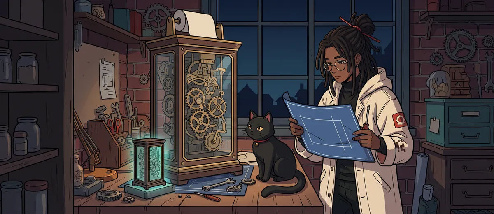
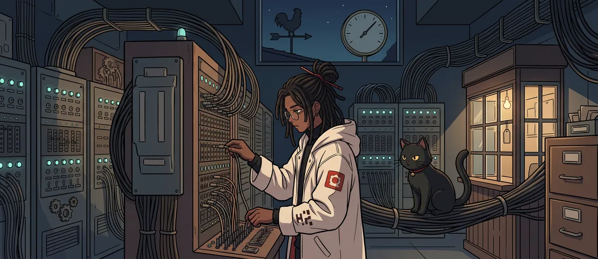
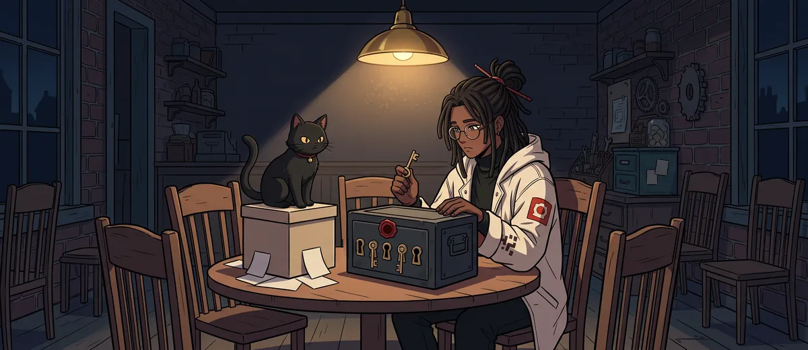

/ VOL. 2 · COMPRENDRE LE WEB3, MODULE PAR MODULE
Le web3, sans fumée. Les neuf modules.
Du web qu’on lit aux ponts entre chaînes : chaque quartier explique une idée, la met dans un schéma à manipuler et démonte une idée reçue, ses sources dans la phrase. C’est de l’éducation : aucun conseil en placement, aucun signal, aucune promesse de gain.
Chez la salle de Samia · exemple inventé
Ouvrir l’atlas
Choisir un quartier
Les quartiers
0 quartier fait sur 33
Fondations : d’où vient le web3
Avant les mots techniques : ce qui change entre le web qu’on lit, celui où l’on publie et celui où l’on possède. Puis les trois outils de cryptographie qui font tout le reste.
Ces leçons sont de l’éducation, pas un conseil financier ni un conseil en placement. Aucun signal de trading, aucune gestion de fonds, aucune promesse de gain.
Les règles changent d’un pays à l’autre. En Algérie, la loi 25-10 de juillet 2025 interdit l’achat, la vente, la détention et la promotion des crypto-actifs : vérifiez toujours la loi là où vous vivez.


Le dossier · Fondations · 1 / 33
Web1, Web2, Web3 : qui garde quoi
Fondations : d’où vient le web3 · avec Raven
Samia relit le devis : « une solution web3 ». Elle se demande ce qui change, au juste, par rapport à son site d’aujourd’hui.
La règle
Le web est né au CERN, où Tim Berners-Lee en écrit la première proposition en mars 1989. Selon ethereum.org, le Web 1.0 (1990–2004) était fait surtout de sites statiques qu’on lisait ; le Web 2.0 a laissé chacun publier, mais la plateforme garde les comptes, les données et les règles. Le web3 désigne des applications dont certains registres vivent sur une blockchain publique : l’utilisateur tient sa propre clé, et ce qu’il possède est écrit dans un registre qu’aucune entreprise ne tient seule. ethereum.org cite une formule de 2020 : « Web1 était en lecture seule, Web2 est en lecture-écriture, Web3 sera en lecture-écriture-possession » (notre traduction). Ce sont des étiquettes, pas des versions : les trois existent côte à côte, et ethereum.org note que le web3 dépend encore surtout d’une infrastructure centralisée.
L’exercice de terrain
Le schéma à manipuler
Manipulez le schéma jusqu’à son dernier état : l’exercice est alors fait. Rien ne sort de ce navigateur. Ensuite, la situation, juste en dessous.
L’exercice de terrain
Le schéma à manipuler
Ouvert
Manipulez le schéma jusqu’à son dernier état : l’exercice est alors fait. Rien ne sort de ce navigateur. Ensuite, la situation, juste en dessous.
Où vit votre message ?
Le web
Web1
Sur le serveur de l’entreprise qui publie le site. Vous lisez ; vous ne publiez pas.
Web2
Dans la base de données de la plateforme. Votre compte est chez elle.
Web3
- Ouverture samedi, 9 h
- Ouverture samedi, 9 h
- Ouverture samedi, 9 h
- Ouverture samedi, 9 h
- Ouverture samedi, 9 h
- Ouverture samedi, 9 h
- Ouverture samedi, 9 h
Une ligne dans un registre copié sur de nombreux nœuds, liée à votre clé. Un site ordinaire l’affiche.
Il se passe quelque chose
| Je modifie le message | La plateforme ferme mon compte | La plateforme ferme | Le site qui l’affiche tombe | |
|---|---|---|---|---|
| Web1 | Impossible : en Web1, seul l’éditeur du site modifie la page. | Vous n’avez pas de compte : vous ne faisiez que lire. | La page disparaît avec l’entreprise. | La page n’est plus lisible. |
| Web2 | Modifié, selon les règles de la plateforme. | Le message disparaît avec le compte. | Le message disparaît avec la plateforme. | Le message reste en base, mais personne ne le voit. |
| Web3 | Une nouvelle ligne s’ajoute ; l’ancienne reste dans l’historique. | Pas de compte à fermer : la ligne reste liée à votre clé. | Le registre continue tant que d’autres nœuds le tiennent. | La ligne reste dans le registre, mais le site qui l’affichait est parti : il en faut un autre. Le web3 dépend encore de serveurs ordinaires (ethereum.org). |
Sans JavaScript, le schéma s’affiche à l’arrêt et les boutons ne font rien ; le texte dit tout.
Idée reçue Le web3 remplace le web : il n’y a plus de serveurs.
En fait Une application web3 est le plus souvent un site ordinaire qui lit et écrit aussi dans un registre partagé. Seuls certains enregistrements passent sur la chaîne.
Web1, Web2, Web3 : qui garde quoi · Une application web3 est le plus souvent un site ordinaire qui lit et écrit aussi dans un registre partagé. Seuls certains enregistrements passent sur la chaîne.

Le dossier · Fondations · 2 / 33
Quatre promesses, et leurs petites lignes
Fondations : d’où vient le web3 · avec Ratman
On lui promet « sans intermédiaire ». Samia se demande à qui elle devrait encore faire confiance.
La règle
Quatre mots reviennent sans cesse. Décentralisé : aucune entreprise seule ne fait tourner le réseau ; mais le NIST, l’agence américaine des normes, juge « pas strictement vraie » l’idée que personne ne contrôle une blockchain. Sans tiers de confiance : selon ethereum.org, le système repose sur des incitations plutôt que sur un intermédiaire ; le NIST rappelle qu’on fait encore confiance à la cryptographie, au code, aux développeurs, et au fait que la plupart des participants ne s’entendent pas en secret. Sans permission : n’importe qui peut lire, écrire et produire des blocs sans demander d’accord ; c’est une propriété du logiciel, pas une autorisation légale. Identité souveraine : l’idée, posée par Christopher Allen en 2016, qu’une personne contrôle sa propre identité numérique au lieu de la louer à une plateforme.
L’exercice de terrain
Le schéma à manipuler
Manipulez le schéma jusqu’à son dernier état : l’exercice est alors fait. Rien ne sort de ce navigateur. Ensuite, la situation, juste en dessous.
L’exercice de terrain
Le schéma à manipuler
Ouvert
Manipulez le schéma jusqu’à son dernier état : l’exercice est alors fait. Rien ne sort de ce navigateur. Ensuite, la situation, juste en dessous.
Les quatre mots, promesse et petite ligne
Décentralisé
La promesse Aucune entreprise seule ne fait tourner le réseau.
La petite ligne Le NIST : dire que personne ne contrôle une blockchain n’est « pas strictement vrai ». Utilisateurs, producteurs de blocs et développeurs la pilotent.
Sans tiers de confiance
La promesse ethereum.org : des incitations et des mécanismes économiques au lieu d’intermédiaires de confiance.
La petite ligne Le NIST : la confiance se déplace ; elle ne disparaît pas.
Sans permission
La promesse ethereum.org : tout le monde peut participer, personne n’est exclu.
La petite ligne C’est une propriété du logiciel, pas une autorisation légale.
Les règles changent d’un pays à l’autre. En Algérie, la loi 25-10 de juillet 2025 interdit l’achat, la vente, la détention et la promotion des crypto-actifs : vérifiez toujours la loi là où vous vivez.
Identité souveraine
La promesse Christopher Allen, 2016 : chacun contrôle sa propre identité numérique.
La petite ligne Des normes comme les DID du W3C essaient de la construire (module 3, étape 3). Contrôler une clé ne prouve pas qui l’on est.
Qui faut-il encore croire ?
Avec un intermédiaire
- Vous
- La banquetiers de confiance
- Votre amie
Sur une chaîne publique
- Vous
- Votre amie
Touchez les quatre points de confiance cachés du schéma « Sur une chaîne publique ».
- La cryptographie · Le NIST : on fait confiance aux techniques cryptographiques utilisées.
- Le code des contrats · Le NIST : on fait confiance au fonctionnement correct, sans bug, des smart contracts.
- Les développeurs · Le NIST : on fait confiance aux développeurs du logiciel.
- Pas d’entente secrète · Le NIST : on fait confiance au fait que la plupart des utilisateurs ne s’entendent pas en secret.
Sans JavaScript, le schéma s’affiche à l’arrêt et les boutons ne font rien ; le texte dit tout.
Idée reçue Sans confiance veut dire sûr : personne ne peut tricher.
En fait Bugs de contrat, logiciel défaillant et entente restent des risques : le NIST les liste.
Quatre promesses, et leurs petites lignes · Bugs de contrat, logiciel défaillant et entente restent des risques : le NIST les liste.
Le dossier · Fondations · 3 / 33
Un registre tenu par beaucoup
Fondations : d’où vient le web3 · avec Techno Pigeon
Samia se demande comment un registre tenu par des inconnus pourrait rester juste.
La règle
Un registre, c’est une liste d’opérations, tenue d’habitude par une seule organisation : le NIST rappelle qu’il faut alors lui faire confiance pour ne pas le perdre, ne pas le modifier, ne rien y oublier. Un registre distribué est tenu par de nombreux ordinateurs indépendants, les nœuds, et chaque nœud complet vérifie tout et garde sa propre copie du registre (NIST) ; certains logiciels peuvent effacer l’historique le plus ancien (module 6, étape 2). L’article de Bitcoin (2008) donne la recette : les nouvelles opérations sont diffusées à tous les nœuds, chacun les range dans un bloc, et les autres n’acceptent ce bloc que si tout y est valide ; ils le montrent en construisant le bloc suivant sur son empreinte. Un nœud peut partir et revenir : il rattrape ce qu’il a manqué. Tous les registres distribués ne sont pas publics : certains sont réservés à des membres autorisés (NIST).
L’exercice de terrain
Le schéma à manipuler
Manipulez le schéma jusqu’à son dernier état : l’exercice est alors fait. Rien ne sort de ce navigateur. Ensuite, la situation, juste en dessous.
L’exercice de terrain
Le schéma à manipuler
Ouvert
Manipulez le schéma jusqu’à son dernier état : l’exercice est alors fait. Rien ne sort de ce navigateur. Ensuite, la situation, juste en dessous.
Le réseau qui se répète
-
Nœud 1
- Lina → Amine : 3 billets
- Amine → Sara : 1 billet
- Sara → Lina : 2 billets
empreinte ce63d8ab
-
Nœud 2
- Lina → Amine : 3 billets
- Amine → Sara : 1 billet
- Sara → Lina : 2 billets
empreinte ce63d8ab
-
Nœud 3
- Lina → Amine : 3 billets
- Amine → Sara : 1 billet
- Sara → Lina : 2 billets
empreinte ce63d8ab
-
Nœud 4
- Lina → Amine : 30 billets
- Amine → Sara : 1 billet
- Sara → Lina : 2 billets
empreinte 84fa0a05
ne correspond plus
-
Nœud 5
- Lina → Amine : 3 billets
- Amine → Sara : 1 billet
- Sara → Lina : 2 billets
empreinte ce63d8ab
-
Nœud 6
- Lina → Amine : 3 billets
- Amine → Sara : 1 billet
- Sara → Lina : 2 billets
empreinte ce63d8ab
-
Nœud 7
- Lina → Amine : 3 billets
- Amine → Sara : 1 billet
- Sara → Lina : 2 billets
empreinte ce63d8ab
empreinte
Simplifié : l’empreinte est un SHA-256 de la copie, calculé dans votre navigateur.
Votre navigateur ne propose pas ce calcul ici (il faut une page sécurisée, en https). Le schéma montre le résultat attendu.
- La copie du nœud 4 ne correspond plus : le réseau garde l’historique commun.
- Un seul serveur : la ligne modifiée devient la vérité pour tout le monde, et rien ne permet de le voir.
Sans JavaScript, le schéma s’affiche à l’arrêt et les boutons ne font rien ; le texte dit tout.
Idée reçue Distribué veut dire que les données sont découpées en morceaux.
En fait Chaque nœud complet garde sa propre copie : c’est répliqué, pas découpé (NIST), même si certains nœuds élaguent le plus ancien.
Un registre tenu par beaucoup · Chaque nœud complet garde sa propre copie : c’est répliqué, pas découpé (NIST), même si certains nœuds élaguent le plus ancien.
Le dossier · Fondations · 4 / 33
Empreinte, clé, signature
Fondations : d’où vient le web3 · avec Raven
Son prestataire parle de signatures et d’empreintes ; Samia veut savoir ce que ces mots prouvent vraiment.
La règle
Trois outils font presque tout le travail. Une fonction de hachage fait une empreinte de taille fixe de n’importe quelle donnée : la même entrée donne toujours la même empreinte, le moindre changement en donne une autre, et l’on ne peut pas revenir de l’empreinte à la donnée (norme FIPS 180-4 du NIST). Bitcoin utilise SHA-256 ; Ethereum utilise Keccak-256, la version d’origine de Keccak, qui donne d’autres résultats que la norme finale SHA3-256 (Yellow Paper d’Ethereum, FIPS 202). Une paire de clés, c’est une clé privée gardée secrète et une clé publique tirée d’elle : selon ethereum.org, on ne peut pas retrouver la clé privée à partir de la publique, et une adresse Ethereum est faite des 20 derniers octets de l’empreinte Keccak-256 de la clé publique. Une signature se fait avec la clé privée et se vérifie par n’importe qui avec la clé publique (FIPS 186-5) : elle prouve quelle clé a signé et que rien n’a changé, mais elle ne cache rien.
L’exercice de terrain
Le schéma à manipuler
Manipulez le schéma jusqu’à son dernier état : l’exercice est alors fait. Rien ne sort de ce navigateur. Ensuite, la situation, juste en dessous.
L’exercice de terrain
Le schéma à manipuler
Ouvert
Manipulez le schéma jusqu’à son dernier état : l’exercice est alors fait. Rien ne sort de ce navigateur. Ensuite, la situation, juste en dessous.
Fonction
ba7816bf 8f01cfea 414140de 5dae2223 b00361a3 96177a9c b410ff61 f20015ad
Keccak-256 (Ethereum)
SHA3-256 (norme du NIST)
Même mot, deux empreintes différentes : Ethereum n’utilise pas la norme SHA-3 finale.
Votre navigateur ne propose pas ce calcul ici (il faut une page sécurisée, en https). Le schéma montre le résultat attendu.
| SHA-256 | "abc" | ba7816bf 8f01cfea 414140de 5dae2223 b00361a3 96177a9c b410ff61 f20015ad | [11] |
|---|---|---|---|
| Keccak-256 (Ethereum) | "" | c5d24601 86f7233c 927e7db2 dcc703c0 e500b653 ca82273b 7bfad804 5d85a470 | [13] |
| SHA3-256 (norme du NIST) | "" | a7ffc6f8 bf1ed766 51c14756 a061d662 f580ff4d e43b49fa 82d80a4b 80f8434a | [12] |
Sans JavaScript, le schéma s’affiche à l’arrêt et les boutons ne font rien ; le texte dit tout.
- SignerJe livre le 12 mars
- MessageJe livre le 12 mars
- VérifierJe livre le 12 mars
Signature valide ✓ : c’est bien cette clé, et le message n’a pas changé.
Si le message change après la signature
- SignerJe livre le 12 mars
- Message
Je livre le 12 marsJe livre le 15 mars - VérifierJe livre le 15 mars
Signature refusée ✗ : le message a changé depuis la signature.
Idée reçue Hacher et signer, c’est chiffrer : ma transaction est privée.
En fait Une empreinte ne se « déchiffre » pas, et une signature prouve l’auteur sans rien cacher : les transactions signées sont publiques.
Empreinte, clé, signature · Une empreinte ne se « déchiffre » pas, et une signature prouve l’auteur sans rien cacher : les transactions signées sont publiques.
Module 1 terminé : le sceau du réseau est dans votre carnet.
Sous le capot d’une chaîne
Ce qu’il y a dans un bloc, comment des milliers de machines se mettent d’accord sans chef, ce qu’on sacrifie pour aller vite, et ce que veulent dire « couche 1 » et « couche 2 ».
Ces leçons sont de l’éducation, pas un conseil financier ni un conseil en placement. Aucun signal de trading, aucune gestion de fonds, aucune promesse de gain.
Les règles changent d’un pays à l’autre. En Algérie, la loi 25-10 de juillet 2025 interdit l’achat, la vente, la détention et la promotion des crypto-actifs : vérifiez toujours la loi là où vous vivez.

Le dossier · Mécanique · 5 / 33
Ce qu’il y a dans un bloc
Sous le capot d’une chaîne · avec Ratman
Samia se demande ce qu’on range, concrètement, dans un « bloc ».
La règle
Un bloc a deux parties : un petit en-tête et une liste d’opérations. Chez Bitcoin, l’en-tête fait exactement 80 octets : une version, l’empreinte de l’en-tête précédent, une « racine de Merkle » qui résume toutes les opérations, une date, une cible de difficulté et un nombre appelé nonce (documentation des développeurs de Bitcoin). Comme chaque en-tête contient l’empreinte du précédent, les blocs forment une chaîne : modifiez une ancienne opération, et le lien suivant ne correspond plus. L’arbre de Merkle se construit en hachant les opérations deux par deux, puis les empreintes deux par deux, jusqu’à une seule racine. Son grand avantage, selon l’article de Bitcoin : un portefeuille léger vérifie qu’une opération est dans un bloc avec quelques empreintes et l’en-tête, sans tout télécharger.
L’exercice de terrain
Le schéma à manipuler
Manipulez le schéma jusqu’à son dernier état : l’exercice est alors fait. Rien ne sort de ce navigateur. Ensuite, la situation, juste en dessous.
L’exercice de terrain
Le schéma à manipuler
Ouvert
Manipulez le schéma jusqu’à son dernier état : l’exercice est alors fait. Rien ne sort de ce navigateur. Ensuite, la situation, juste en dessous.
L’arbre et la chaîne
Nombre impair : la dernière empreinte est associée à sa propre copie, comme chez Bitcoin.
-
Bloc 1
Précédent 00000000
Racine d1f36f29
Nonce 2083
empreinte aed1e681
-
Bloc 2
Précédent aed1e681
Racine bbb440e2
Nonce 917
empreinte 6f7c504b
-
Bloc 3
Précédent 6f7c504b
Racine de5ae094
Nonce 4410
empreinte f11bf068
Simplifié : Bitcoin hache deux fois, sur des octets dans un ordre particulier ; ici on hache une fois, sur du texte, pour suivre.
Votre navigateur ne propose pas ce calcul ici (il faut une page sécurisée, en https). Le schéma montre le résultat attendu.
Opération 3
Sara → Karim : 20 billets → d500c471 modifié
3·4 e57d6865 modifié · Racine d3bdb2b1 modifié
Lien cassé : l’empreinte du bloc 1 a changé, le bloc 2 attend l’ancienne.
Sans JavaScript, le schéma s’affiche à l’arrêt et les boutons ne font rien ; le texte dit tout.
Idée reçue Une blockchain ne peut jamais être modifiée.
En fait Le NIST dit d’une blockchain qu’elle rend les modifications visibles et difficiles (« tamper evident and tamper resistant ») : plus difficiles à mesure que des blocs s’ajoutent, pas physiquement impossibles.
Ce qu’il y a dans un bloc · Le NIST dit d’une blockchain qu’elle rend les modifications visibles et difficiles (« tamper evident and tamper resistant ») : plus difficiles à mesure que des blocs s’ajoutent, pas physiquement impossibles.
Le dossier · Mécanique · 6 / 33
Se mettre d’accord sans chef
Sous le capot d’une chaîne · avec Raven
Sans chef, qui décide de la prochaine page du registre ? Samia note la question.
La règle
Des milliers de machines doivent choisir le prochain bloc, et personne ne décide pour elles. Preuve de travail (Bitcoin ; Ethereum jusqu’en 2022) : on hache l’en-tête encore et encore en changeant le nonce, jusqu’à tomber sous une cible ; trouver coûte cher, vérifier ne prend qu’un hachage (article de Bitcoin). Preuve d’enjeu (Ethereum depuis le 15 septembre 2022) : des validateurs déposent au moins 32 ETH en garantie (jusqu’à 2 048 depuis la mise à jour Pectra de mai 2025), proposent des blocs à tour de rôle par créneaux de 12 secondes et votent ; tricher peut détruire une partie du dépôt, voire tout le dépôt (ethereum.org). Preuve d’enjeu déléguée, par exemple chez TRON : les détenteurs élisent un petit groupe fixe de producteurs, 27 selon sa documentation. Consensus byzantin classique, par exemple CometBFT : un groupe connu de validateurs vote par tours et valide un bloc quand plus des deux tiers sont d’accord ; il reste sûr tant que moins d’un tiers est défaillant.
L’exercice de terrain
Le schéma à manipuler
Manipulez le schéma jusqu’à son dernier état : l’exercice est alors fait. Rien ne sort de ce navigateur. Ensuite, la situation, juste en dessous.
L’exercice de terrain
Le schéma à manipuler
Ouvert
Manipulez le schéma jusqu’à son dernier état : l’exercice est alors fait. Rien ne sort de ce navigateur. Ensuite, la situation, juste en dessous.
Quatre façons de choisir le prochain bloc
Travail
bloc d’exemple · Lina → Amine : 3 billets
nonce 344 0087261c914c0d186eee5e9d21d839e2…
Le nombre d’essais est mesuré dans votre navigateur ; il change à chaque fois.
Enjeu
- 132
- 232
- 364
- 432
- 596
- 632
- 764
- 832
- 932
- 1064
dépôt · exemple · taille de la perte : exemple
Enjeu délégué
Il vous reste 10 voix sur 10
- Candidat 1
- Candidat 2
- Candidat 3
- Candidat 4
- Candidat 5
- Candidat 6
Les trois premiers produisent les blocs, chacun son tour.
TRON, cité comme exemple de cette conception : 27 producteurs élus, un créneau toutes les 3 secondes, selon sa documentation.
Byzantin
Bloc validé : 7 votes sur 10, plus des deux tiers.
Sans JavaScript, le schéma s’affiche à l’arrêt et les boutons ne font rien ; le texte dit tout.
Idée reçue Déposer en garantie (« staker »), c’est un livret d’épargne.
En fait En preuve d’enjeu, le dépôt est une caution qui peut être détruite en cas de tricherie (ethereum.org). Ce cours décrit le mécanisme et ne promet aucun rendement.
Se mettre d’accord sans chef · En preuve d’enjeu, le dépôt est une caution qui peut être détruite en cas de tricherie (ethereum.org). Ce cours décrit le mécanisme et ne promet aucun rendement.

Le dossier · Mécanique · 7 / 33
Le trilemme : deux sur trois
Sous le capot d’une chaîne · avec Techno Pigeon
On lui vante une chaîne rapide, sûre et décentralisée à la fois ; Samia se demande ce qui a été sacrifié.
La règle
Le « trilemme » est une règle empirique, telle que la formule Vitalik Buterin, cofondateur d’Ethereum ; ce n’est pas une démonstration. Il définit trois buts : passer à l’échelle (traiter plus d’opérations qu’un ordinateur portable ordinaire ne peut en vérifier), rester décentralisé (sans dépendre d’un petit groupe de grands acteurs), rester sûr (résister même si une grande part des nœuds attaque). Selon lui, des techniques « simples » n’en obtiennent que deux : les chaînes où chacun vérifie tout sont sûres et décentralisées, mais ne passent pas à l’échelle ; celles tenues par 10 à 100 nœuds sont rapides et sûres, mais moins décentralisées ; plusieurs petites chaînes reliées par des ponts passent à l’échelle, mais chacune est plus facile à attaquer. Il soutient que des techniques plus avancées peuvent obtenir les trois : c’est son argument, pas un fait établi. La question utile pour vous : qui peut encore vérifier cette chaîne avec un ordinateur ordinaire ?
L’exercice de terrain
Le schéma à manipuler
Manipulez le schéma jusqu’à son dernier état : l’exercice est alors fait. Rien ne sort de ce navigateur. Ensuite, la situation, juste en dessous.
L’exercice de terrain
Le schéma à manipuler
Ouvert
Manipulez le schéma jusqu’à son dernier état : l’exercice est alors fait. Rien ne sort de ce navigateur. Ensuite, la situation, juste en dessous.
Choisissez deux sommets
Sûr
À l’échelle
Décentralisé
Le partitionnement (sharding) : l’argument de Buterin est que des techniques avancées visent les trois. Son avis, cité.
-
Chaque participant vérifie chaque opération
Sûr et décentralisé · Ce qu’elle cède : l’échelle. Elle ne traite pas plus que ce qu’un portable ordinaire peut vérifier.
-
10 à 100 gros nœuds s’accordent entre eux
Sûr et à l’échelle · Ce qu’elle cède : la décentralisation. Elle dépend d’un petit groupe de grands acteurs.
-
Beaucoup de petites chaînes reliées par des ponts
À l’échelle et décentralisé · Ce qu’elle cède : la sécurité. Chaque petite chaîne est plus facile à attaquer.
Sans JavaScript, le schéma s’affiche à l’arrêt et les boutons ne font rien ; le texte dit tout.
Idée reçue Le trilemme est une loi de la nature : une chaîne qui promet les trois ment.
En fait C’est la règle empirique d’un auteur pour les conceptions simples, et le même auteur soutient qu’on peut la dépasser. Jugez une promesse en demandant qui peut encore vérifier la chaîne.
Les sources du cours [12]
Le trilemme : deux sur trois · C’est la règle empirique d’un auteur pour les conceptions simples, et le même auteur soutient qu’on peut la dépasser. Jugez une promesse en demandant qui peut encore vérifier la chaîne.
Le dossier · Mécanique · 8 / 33
Couche 1, couche 2
Sous le capot d’une chaîne · avec Techno Pigeon
Pour cent petits paiements d’adhérentes, Samia se demande quelle route on lui propose, et pourquoi.
La règle
Une couche 1 est une chaîne de base, avec ses propres validateurs et son propre consensus : Bitcoin, Ethereum ou Solana en sont des exemples. Une couche 2 fait le travail ailleurs mais s’appuie sur la couche 1 pour sa sécurité. Les rollups exécutent les opérations hors de la chaîne, puis y publient les données : les rollups « optimistes » supposent le lot correct et laissent environ sept jours pour prouver une fraude ; les rollups « ZK » publient une preuve mathématique que la chaîne vérifie, sans cette attente (ethereum.org). Les canaux d’état bloquent des fonds une fois sur la chaîne, puis les deux parties échangent des mises à jour signées et ne reviennent qu’à la fermeture ; Lightning, chez Bitcoin, en est un exemple selon ses spécifications. Une chaîne latérale (sidechain) a son propre consensus et un pont : ethereum.org ne la compte pas comme couche 2, car elle n’hérite pas de la sécurité d’Ethereum.
L’exercice de terrain
Le schéma à manipuler
Manipulez le schéma jusqu’à son dernier état : l’exercice est alors fait. Rien ne sort de ce navigateur. Ensuite, la situation, juste en dessous.
L’exercice de terrain
Le schéma à manipuler
Ouvert
Manipulez le schéma jusqu’à son dernier état : l’exercice est alors fait. Rien ne sort de ce navigateur. Ensuite, la situation, juste en dessous.
Cinq routes pour cent petits transferts
Choisissez une route
| Comment passent cent petits transferts | Revenir à la chaîne de base | Si l’opérateur triche | |
|---|---|---|---|
| Sur la couche 1 | Cent opérations font la queue à la porte, une par une. | Vous y êtes déjà. | Pas d’opérateur à part : ce sont les règles de la chaîne. |
| Rollup optimiste | Regroupées en un lot ; la liste est publiée à la porte. | Environ sept jours de délai de contestation (ethereum.org). | Un observateur prouve la fraude pendant le délai. |
| Rollup ZK | Regroupées en un lot, avec une preuve de validité vérifiée à la porte. | Pas de délai, selon ethereum.org. | Le contrat de la couche 1 refuse une preuve fausse. |
| Chaîne latérale | Sur une autre route, avec ses propres gardes, reliée par un pont. | Par le pont. | Seuls ses propres validateurs et le pont font barrage : la sécurité de la couche 1 ne la couvre pas. |
| Canal d’état | Deux personnes échangent des mises à jour signées ; seules l’ouverture et la fermeture passent la porte. | À la fermeture du canal. | L’autre partie doit être en ligne pour contester. |
Aucun chiffre de frais ni de vitesse ici : ils changent, et aucun n’a été vérifié.
Sans JavaScript, le schéma s’affiche à l’arrêt et les boutons ne font rien ; le texte dit tout.
Idée reçue Tout ce qui se présente comme « extension d’Ethereum » a la sécurité d’Ethereum.
En fait Chaînes latérales, plasma et validiums assurent leur propre sécurité (ethereum.org). Et sur un rollup optimiste, revenir à la chaîne de base peut prendre une semaine.
Couche 1, couche 2 · Chaînes latérales, plasma et validiums assurent leur propre sécurité (ethereum.org). Et sur un rollup optimiste, revenir à la chaîne de base peut prendre une semaine.
Les outils et les chaînes cités sont des exemples tirés de leur propre documentation, pas des recommandations.
Module 2 terminé : le sceau du bloc est dans votre carnet.
Portefeuilles, clés et identité
Un portefeuille ne contient pas de jetons : il garde des clés. Qui les tient, comment on les recrée, ce qu’un nom ou un identifiant prouve vraiment, et comment lire une demande avant de signer.
Ces leçons sont de l’éducation, pas un conseil financier ni un conseil en placement. Aucun signal de trading, aucune gestion de fonds, aucune promesse de gain.
Les règles changent d’un pays à l’autre. En Algérie, la loi 25-10 de juillet 2025 interdit l’achat, la vente, la détention et la promotion des crypto-actifs : vérifiez toujours la loi là où vous vivez.

Le dossier · Clés · 9 / 33
Qui tient les clés, et sont-elles en ligne ?
Portefeuilles, clés et identité · avec Raven
Si ses adhérentes avaient un portefeuille, Samia se demande qui en garderait les clés.
La règle
Un portefeuille ne contient pas de jetons : c’est un logiciel ou un appareil qui garde et utilise vos clés, et les enregistrements restent sur la chaîne (ethereum.org). Deux questions classent tous les portefeuilles. Qui tient les clés ? Dans un portefeuille non dépositaire, c’est vous : le NIST écrit que l’utilisateur est alors « entièrement responsable » de ses clés, et qu’une clé perdue fait perdre les jetons associés. Dans un portefeuille dépositaire, une entreprise les garde pour vous : on peut récupérer l’accès, mais on lui fait confiance, et une fuite chez elle peut vous coûter. Est-il en ligne ? Un portefeuille « chaud » est connecté et pratique ; un portefeuille « froid » reste hors ligne, et il faut une action physique pour signer (NIST IR 8301).
La boîte à outils Voir la boîte à outils (avec ses avertissements) →
L’exercice de terrain
Le schéma à manipuler
Manipulez le schéma jusqu’à son dernier état : l’exercice est alors fait. Rien ne sort de ce navigateur. Ensuite, la situation, juste en dessous.
L’exercice de terrain
Le schéma à manipuler
Ouvert
Manipulez le schéma jusqu’à son dernier état : l’exercice est alors fait. Rien ne sort de ce navigateur. Ensuite, la situation, juste en dessous.
Deux questions, une grille
-
Une extension de navigateur
Moi · en ligne · Vous tenez la clé, sur un appareil connecté. Si vous la perdez, personne ne la recrée sans votre phrase. Avant chaque signature : relire la demande.
-
Une application de téléphone
Moi · en ligne · Vous tenez la clé, sur un appareil connecté. Le téléphone perdu, il reste la phrase de récupération. Avant chaque signature : relire la demande.
-
Un compte sur une plateforme d’échange
Une entreprise · en ligne · La plateforme tient les clés : elle peut vous rendre l’accès, et une fuite chez elle peut vous coûter (NIST). Ce qu’elle garde hors ligne de son côté est son affaire.
-
Un appareil matériel dédié
Moi · hors ligne · Vous tenez la clé, dans une puce qui ne la laisse pas sortir ; il faut appuyer sur l’appareil pour signer (NIST). Il signe ce que vous acceptez : relisez quand même.
-
Une phrase de récupération écrite sur papier, dans un tiroir
Moi · hors ligne · Une sauvegarde hors ligne de votre clé. Le NIST le rappelle : le papier peut être perdu, volé ou détruit.
Deux clés sur trois, deux à vous et une chez une entreprise : le NIST parle de garde partielle ou collaborative. Elle se range entre les deux colonnes.
Sans JavaScript, le schéma s’affiche à l’arrêt et les boutons ne font rien ; le texte dit tout.
Idée reçue Mes jetons sont rangés dans l’application.
En fait Ils restent sur la chaîne ; le portefeuille garde les clés et vous montre une fenêtre dessus (ethereum.org). Et un appareil matériel protège la clé, mais signe ce que vous acceptez : le NIST demande de relire chaque opération.
Qui tient les clés, et sont-elles en ligne ? · Ils restent sur la chaîne ; le portefeuille garde les clés et vous montre une fenêtre dessus (ethereum.org). Et un appareil matériel protège la clé, mais signe ce que vous acceptez : le NIST demande de relire chaque opération.
Le dossier · Clés · 10 / 33
Douze mots, un arbre de clés
Portefeuilles, clés et identité · avec Ratman
Douze mots pour tout récupérer ? Samia veut comprendre avant qu’une adhérente lui en parle.
La règle
Une phrase de récupération est un grand nombre aléatoire écrit en mots. La norme BIP-39 prend de 128 à 256 bits au hasard, ajoute une courte somme de contrôle tirée de leur empreinte SHA-256, coupe le tout en morceaux de 11 bits, et chaque morceau choisit un mot dans une liste fixe de 2 048 : on obtient 12 à 24 mots, dont le dernier sert en partie de contrôle. Les mots, plus une phrase de passe facultative, passent par 2 048 tours d’une fonction appelée PBKDF2 pour donner une « graine » : chaque phrase de passe différente donne un autre portefeuille, valide lui aussi. La norme BIP-32 fait pousser de cette graine tout un arbre de clés : une seule sauvegarde restaure tous les comptes, et la fuite d’une seule sauvegarde les livre tous. L’abstraction de compte (norme ERC-4337) prend une autre voie : le compte est un smart contract avec ses propres règles, par exemple une récupération par des proches de confiance, sans changer le protocole d’Ethereum.
L’exercice de terrain
Le schéma à manipuler
Manipulez le schéma jusqu’à son dernier état : l’exercice est alors fait. Rien ne sort de ce navigateur. Ensuite, la situation, juste en dessous.
L’exercice de terrain
Le schéma à manipuler
Ouvert
Manipulez le schéma jusqu’à son dernier état : l’exercice est alors fait. Rien ne sort de ce navigateur. Ensuite, la situation, juste en dessous.
Des mots qui sont des nombres
Ne tapez jamais une vraie phrase de récupération sur un site, celui-ci compris. Cette démo n’accepte aucune phrase tapée : elle part de la phrase de test publique de la norme, marquée TEST, et ne laisse changer qu’un mot à la fois, parmi deux mots fixés.
Un seul mot change à la fois : en changer un remet les autres à la phrase de test.
Phrase de passe d’exemple (fixée : rien à taper)
Graine (début) —
La graine n’est calculée que pour la phrase de test intacte.
Votre navigateur ne propose pas ce calcul ici (il faut une page sécurisée, en https). Le schéma montre le résultat attendu.
Sans JavaScript, le schéma s’affiche à l’arrêt et les boutons ne font rien ; le texte dit tout.
- graine
- m/44′
- 60′ · Ethereum
- compte 0′clé publique étendue
- 0
- adresse 0
- adresse 1
- adresse 2
- 0
- compte 0′clé publique étendue
- 0′ · Bitcoin
- 501′ · Solana
- 60′ · Ethereum
- m/44′
Clé publique étendue : elle peut fabriquer des adresses de réception, pas dépenser (BIP-32, l’exemple de la boutique en ligne).
Pas de vrai calcul de clés ici : les navigateurs ne proposent pas la courbe utilisée par ces chaînes.
- Vous envoyez une « UserOperation », pas une transaction ordinaire.
- Un « bundler » la regroupe avec d’autres.
- Le contrat EntryPoint appelle votre compte.
- Votre compte applique ses propres règles : par exemple, deux gardiens sur trois peuvent remplacer la clé.
- Un « paymaster », facultatif, peut payer les frais à votre place.
Idée reçue Les douze mots sont un mot de passe que je peux changer s’il fuit.
En fait Les mots sont la clé elle-même : après une fuite, il faut tout déplacer vers une nouvelle phrase, et l’ancienne reste valable pour toujours. ethereum.org : ne la gardez pas sur un ordinateur ; écrivez-la et rangez-la.
Douze mots, un arbre de clés · Les mots sont la clé elle-même : après une fuite, il faut tout déplacer vers une nouvelle phrase, et l’ancienne reste valable pour toujours. ethereum.org : ne la gardez pas sur un ordinateur ; écrivez-la et rangez-la.
Le dossier · Clés · 11 / 33
Un identifiant, une attestation, un nom
Portefeuilles, clés et identité · avec Raven
Samia se demande si une attestation de séances pourrait se vérifier sans qu’on l’appelle.
La règle
Un identifiant décentralisé (DID) est une norme du W3C de juillet 2022 : une chaîne de texte en trois parties, par exemple did:example:123456789abcdefghi, qui renvoie à un document listant les clés qui prouvent qui contrôle cet identifiant ; selon le W3C, beaucoup de méthodes utilisent une blockchain, pas toutes. Une attestation vérifiable (norme du W3C, version 2.0 de mai 2025) est un certificat signé : un émetteur, par exemple une école, signe des affirmations sur vous, vous la gardez, et un vérificateur, par exemple un employeur, contrôle la signature sans appeler l’école. ENS, le service de noms d’Ethereum, relie des noms lisibles comme alice.eth à des adresses, en deux temps : un registre indique un résolveur, qui répond. Aucun de ces outils ne prouve qui est une personne au sens courant : un DID prouve le contrôle de clés, un nom est une étiquette, et les faits sur une personne valent ce que vaut leur émetteur (notre lecture des rôles du W3C).
L’exercice de terrain
Le schéma à manipuler
Manipulez le schéma jusqu’à son dernier état : l’exercice est alors fait. Rien ne sort de ce navigateur. Ensuite, la situation, juste en dessous.
L’exercice de terrain
Le schéma à manipuler
Ouvert
Manipulez le schéma jusqu’à son dernier état : l’exercice est alors fait. Rien ne sort de ce navigateur. Ensuite, la situation, juste en dessous.
Émettre, garder, présenter
Émetteur : une école
Détenteur : vous
- Nom
- Sara B.
- Diplôme
- Licence de design
- Année
- 2025
- Mention
- Bien
- —
Vérificateur : un employeur
- Vérifiée ✓ : signée par l’école, rien n’a changé.
- Refusée ✗ : la carte a été modifiée après la signature.
Clés de démonstration sur la courbe P-256 du NIST : les chaînes citées utilisent d’autres courbes, que les navigateurs ne proposent pas.
Faites pour cette démo, gardées en mémoire, effacées quand vous quittez la page.
Votre navigateur ne propose pas ce calcul ici (il faut une page sécurisée, en https). Le schéma montre le résultat attendu.
Sans JavaScript, le schéma s’affiche à l’arrêt et les boutons ne font rien ; le texte dit tout.
- support.eth1. Le registre indique le résolveur de ce nom.2. Le résolveur répond : 0x2b90…4d11
- Reçu de 0x7a3f…c91e · affiché comme « support.eth » (nom inverse)Vérifier dans les deux sens0x2b90…4d11 ≠ 0x7a3f…c91eLes adresses ne correspondent pas : on affiche l’adresse brute, comme l’exigent les docs d’ENS.
Noms et adresses inventés pour la démo.
Idée reçue Un DID ou un nom en .eth prouve qui est quelqu’un.
En fait Un DID prouve le contrôle de clés, un nom est une étiquette enregistrée. Et tout ce qui est écrit sur une chaîne publique est public : les données personnelles restent dans une base (étapes 2 et 4 du parcours acheteur).
Un identifiant, une attestation, un nom · Un DID prouve le contrôle de clés, un nom est une étiquette enregistrée. Et tout ce qui est écrit sur une chaîne publique est public : les données personnelles restent dans une base (étapes 2 et 4 du parcours acheteur).
Le dossier · Clés · 12 / 33
Lire avant de signer
Portefeuilles, clés et identité · avec Techno Pigeon
Une fenêtre demande de « signer ». Samia se demande ce qu’une adhérente accepterait en cliquant.
La règle
Notre lecture des sources : les pertes viennent surtout d’une personne qui accepte quelque chose, pas d’une cryptographie cassée. Première règle, selon ethereum.org : aucun service, aucun support, aucun site légitime ne vous demandera votre phrase de récupération. Deuxième règle : savoir ce qu’une signature accorde. Une « autorisation » (approve, norme ERC-20) laisse un contrat retirer de votre compte plusieurs fois, jusqu’à une limite ; une autorisation illimitée reste valable tant que vous ne la révoquez pas, même après « déconnexion », et la révoquer coûte des frais (guide d’ethereum.org). Un simple message signé peut aussi fixer une autorisation (norme ERC-2612), et depuis mai 2025 une signature peut confier un compte Ethereum à du code : la norme EIP-7702 dit elle-même qu’il n’existe « aucune façon sûre » pour un site de le demander. Troisième règle : regarder avant de signer ; un portefeuille peut simuler l’opération sans l’envoyer, ce qui donne un aperçu, pas une garantie (notre lecture). Quatrième règle, pour l’argent partagé : un multisig demande m clés sur n, par exemple 2 sur 3.
La boîte à outils Voir la boîte à outils (avec ses avertissements) →
L’exercice de terrain
Le schéma à manipuler
Manipulez le schéma jusqu’à son dernier état : l’exercice est alors fait. Rien ne sort de ce navigateur. Ensuite, la situation, juste en dessous.
L’exercice de terrain
Le schéma à manipuler
Ouvert
Manipulez le schéma jusqu’à son dernier état : l’exercice est alors fait. Rien ne sort de ce navigateur. Ensuite, la situation, juste en dessous.
Cinq demandes, une par une
-
« Se connecter à exemple.app » : un message en clair, aucun montant.
Inspecter
Un message lisible, aucune transaction, aucun montant : signer ici ne déplace rien.
Signer · Rien ne bouge : c’est une connexion.
-
« Autoriser : dépenses illimitées de vos jetons par 0x7a3f…c91e »
Inspecter
approve(0x7a3f…c91e, 115792089237316195423570985008687907853269984665640564039457584007913129639935) : le plus grand nombre possible. Autorisation après signature : illimitée.
Refuser · Une autorisation illimitée reste valable jusqu’à ce que vous la révoquiez.
-
Une signature de « données structurées » : spender, value: max, deadline
Inspecter
C’est un permit (norme ERC-2612) : aucune transaction, mais une autorisation de dépense.
Refuser · Un message signé peut fixer une autorisation.
-
« Mettre à niveau votre compte » (une autorisation de type 7702)
Inspecter
La norme EIP-7702 : le code autorisé a « un accès sans restriction au compte », et il n’existe « aucune façon sûre » pour un site de le proposer.
Refuser · C’est confier tout le compte à du code.
-
« Envoyer à 0x51c3…9e2A », l’adresse de votre amie, croyez-vous
Inspecter
Votre amie : 0x51c3 8d07 41aa … 9e2A · La demande : 0x51c3 f2e9 07bd … 9e2A. Même début, même fin, milieu différent.
Refuser · Comparez l’adresse en entier, pas les premiers et derniers caractères.
Exemple dans la page : aucune vraie chaîne, aucun portefeuille, rien n’est envoyé.
Sans JavaScript, le schéma s’affiche à l’arrêt et les boutons ne font rien ; le texte dit tout.
- Jeton A · 0x7a3f…c91e · illimitéeRévoquer
- Jeton B · 0x0d42…77f0 · 50 unitésRévoquer
Révoquée. C’est une transaction : elle coûte des frais de réseau.
- Clé A · téléphone
- Clé B · coffre
- Clé C · prestataire
Un voleur a la clé A · Demande bloquée : 1 signature sur les 2 requises.
- Clé A · téléphone
- Clé B · coffre
- Clé C · prestataire
Avec les clés A et B : 2 sur 2 requises, la demande passe.
Idée reçue Seul l’envoi d’argent est risqué ; signer un message est sans danger.
En fait Un message signé peut fixer une autorisation (ERC-2612), et depuis mai 2025 une autorisation peut confier un compte à du code (EIP-7702). Chaque signature est une décision.
Les sources du cours [10] [16] [17] [18] [19] [20] [21] [22] [1] [23]
Lire avant de signer · Un message signé peut fixer une autorisation (ERC-2612), et depuis mai 2025 une autorisation peut confier un compte à du code (EIP-7702). Chaque signature est une décision.
Module 3 terminé : le sceau de la clé est dans votre carnet.
Jetons, normes et règles d’émission
La différence entre l’actif d’une chaîne et un jeton écrit par quelqu’un, les normes qui permettent aux applications de les lire, et les règles qui décident combien il en existe. Des règles, jamais une valeur.
Ces leçons sont de l’éducation, pas un conseil financier ni un conseil en placement. Aucun signal de trading, aucune gestion de fonds, aucune promesse de gain.
Les règles changent d’un pays à l’autre. En Algérie, la loi 25-10 de juillet 2025 interdit l’achat, la vente, la détention et la promotion des crypto-actifs : vérifiez toujours la loi là où vous vivez.

Le dossier · Jetons · 13 / 33
Actif natif ou jeton : où vit le solde ?
Jetons, normes et règles d’émission · avec Ratman
Samia se demande où vivrait, exactement, le solde de points d’une adhérente.
La règle
Chaque chaîne a un actif inscrit dans ses propres règles : sur Ethereum, l’ether (ETH). Selon ethereum.org, seul le protocole crée l’ether, et c’est le seul moyen accepté pour payer les frais. Un jeton est autre chose : un solde tenu à l’intérieur d’un programme, un smart contract que quelqu’un a déployé, et ses règles (qui peut en créer, en détruire, en geler) sont écrites dans ce programme ; selon OpenZeppelin, la façon de créer les jetons doit être ajoutée par le contrat. L’ETH ne suit pas la norme des jetons, plus récente que lui : les applications qui ne parlent qu’elle passent par l’ETH « enveloppé » (WETH), un contrat qui garde l’ETH et émet autant de jetons ; Solana fait de même avec le SOL enveloppé. La vraie question n’est pas « coin ou jeton ? » : ce solde est-il tenu par les règles de la chaîne, ou par un programme qu’il faut lire ?
L’exercice de terrain
Le schéma à manipuler
Manipulez le schéma jusqu’à son dernier état : l’exercice est alors fait. Rien ne sort de ce navigateur. Ensuite, la situation, juste en dessous.
L’exercice de terrain
Le schéma à manipuler
Ouvert
Manipulez le schéma jusqu’à son dernier état : l’exercice est alors fait. Rien ne sort de ce navigateur. Ensuite, la situation, juste en dessous.
Où vit le solde ?
Le registre de la chaîne
ETH : 1,0 (fictif)
frais payés en ETHUn contrat de jeton
| Vous | 120 |
|---|---|
| Lina | 40 |
| Amine | 0 |
exemple
Contrat WETH
| Vous | 0,0 WETH |
|---|
Même principe sur Solana : le SOL enveloppé, avec la « Native Mint » du programme de jetons.
Exemple dans la page : aucune vraie chaîne, aucun portefeuille, rien n’est envoyé.
| Envoyer 0,2 ETH | L’ETH a bougé sur votre compte ; les frais aussi viennent de là. |
|---|---|
| Envoyer 50 jetons | Votre compte n’a pas changé : une ligne du contrat a bougé. Les frais, eux, viennent de l’ETH. |
| Envelopper | 0,5 ETH dans le contrat WETH, et autant de jetons WETH dans sa table : 1 pour 1. |
| Compte sans ETH | Pas d’ETH pour payer les frais : rien ne part, même pas les jetons. |
Sans JavaScript, le schéma s’affiche à l’arrêt et les boutons ne font rien ; le texte dit tout.
Idée reçue « Coin » et « jeton » sont des catégories techniques fixes.
En fait Ce sont des mots d’usage. Ce qu’on peut vérifier : créé par le protocole, ou tenu par un contrat. Et l’ETH n’est pas un jeton ERC-20 (ethereum.org).
Actif natif ou jeton : où vit le solde ? · Ce sont des mots d’usage. Ce qu’on peut vérifier : créé par le protocole, ou tenu par un contrat. Et l’ETH n’est pas un jeton ERC-20 (ethereum.org).
Le dossier · Jetons · 14 / 33
Les normes : une même prise pour tous les jetons
Jetons, normes et règles d’émission · avec Techno Pigeon
Le prestataire cite des « normes de jetons » ; Samia veut savoir à quoi elles servent.
La règle
Une norme de jeton est une liste commune de fonctions et d’événements, pour que portefeuilles et applications lisent des jetons qu’ils n’ont jamais vus. ERC-20 est la norme d’Ethereum pour les jetons interchangeables : chaque unité vaut l’autre, et le contrat garde un solde par adresse. ERC-721 est la norme des jetons uniques (NFT) : chaque jeton a son numéro, et le contrat note quelle adresse possède chaque numéro. ERC-1155 permet à un seul contrat de gérer plusieurs types, interchangeables et uniques, et d’en transférer plusieurs d’un coup. Sur Solana, un programme de jetons commun tient une fiche « mint » par jeton et un compte de jeton par détenteur. Une norme dit à quoi ressemble l’interface, pas qu’un jeton est utile, sûr ou honnête ; et ERC-721 ne stocke pas l’image d’un NFT : il donne un lien, facultatif, qui « peut » changer, selon le texte de la norme.
L’exercice de terrain
Le schéma à manipuler
Manipulez le schéma jusqu’à son dernier état : l’exercice est alors fait. Rien ne sort de ce navigateur. Ensuite, la situation, juste en dessous.
L’exercice de terrain
Le schéma à manipuler
Ouvert
Manipulez le schéma jusqu’à son dernier état : l’exercice est alors fait. Rien ne sort de ce navigateur. Ensuite, la situation, juste en dessous.
Même transfert, quatre registres
ERC-20
| adresse | solde |
|---|---|
| Lina | 100 |
| Amine | 50 |
| Sara | 0 |
Valeur de decimals
Entier stocké 1500000000000000000
Ce qu’un portefeuille affiche 1,5
Le contrat stocke un entier ; l’affichage dépend de decimals.
ERC-721
| numéro | propriétaire | lien (tokenURI) |
|---|---|---|
| #1 | Lina | https://example.org/nft/1.json |
| #2 | Amine | https://example.org/nft/2.json |
| #3 | Sara | https://example.org/nft/3.json |
Le numéro et le propriétaire n’ont pas bougé ; l’image montrée, si. La norme dit que le lien « MAY be mutable ».
ERC-1155
| type | adresse | quantité |
|---|---|---|
| 1 · interchangeable | Lina | 100 |
| 1 · interchangeable | Amine | 50 |
| 1 · interchangeable | Sara | 0 |
| 7 · unique | Lina | 1 |
| 7 · unique | Amine | 0 |
| 7 · unique | Sara | 0 |
SPL (Solana)
- Fiche « mint »
- offre
- 150
- décimales
- 0
- autorité de création
- 9xQe…pF2k
- autorité de gel
- 4mTz…Lw8c
- Compte de jetondétenteur · Linamontant · 100
- Compte de jetondétenteur · Aminemontant · 50
- Compte de jetondétenteur · Saramontant · 0
De
À
Numéro
Événement émis Transfer(Lina, Amine, 10)
Exemple dans la page : aucune vraie chaîne, aucun portefeuille, rien n’est envoyé.
Sans JavaScript, le schéma s’affiche à l’arrêt et les boutons ne font rien ; le texte dit tout.
Idée reçue Un jeton conforme à une norme est un jeton vérifié ou approuvé.
En fait Une norme est une interface : n’importe qui peut déployer un contrat qui répond à balanceOf et transfer. Elle ne dit rien de l’émetteur ni de la qualité du code.
Les normes : une même prise pour tous les jetons · Une norme est une interface : n’importe qui peut déployer un contrat qui répond à balanceOf et transfer. Elle ne dit rien de l’émetteur ni de la qualité du code.
Le dossier · Jetons · 15 / 33
Combien il en existe, et qui en reçoit quand
Jetons, normes et règles d’émission · avec Ratman
Samia se demande qui déciderait combien de jetons existent, et quand on en reçoit.
La règle
La « tokenomics », ce sont les règles qui décident combien d’unités existent, comment il en apparaît ou en disparaît, qui en reçoit et quand, et ce que la détention permet. L’offre peut être plafonnée : le code de Bitcoin divise par deux l’émission nouvelle tous les 210 000 blocs, et bitcoin.org écrit que seuls 21 millions de bitcoins seront créés. Elle peut être émise en continu : Ethereum paie ses validateurs en ETH nouveau. Ou réduite par destruction : Ethereum brûle la part de base de chaque frais, si bien que l’offre nette peut monter ou baisser (ethereum.org). Pour un jeton, tout cela est du code ordinaire : un plafond, une fonction de création, une fonction de destruction, un contrat d’acquisition (vesting) qui libère des unités avec le temps, souvent après une période où rien n’est libéré (le « cliff »). Les droits de vote, eux, suivent souvent le solde, par délégation. Lire ces règles, c’est lire des règles, pas prédire une valeur.
L’exercice de terrain
Le schéma à manipuler
Manipulez le schéma jusqu’à son dernier état : l’exercice est alors fait. Rien ne sort de ce navigateur. Ensuite, la situation, juste en dessous.
L’exercice de terrain
Le schéma à manipuler
Ouvert
Manipulez le schéma jusqu’à son dernier état : l’exercice est alors fait. Rien ne sort de ce navigateur. Ensuite, la situation, juste en dessous.
Le tableau des règles
Modèle d’offre
Émission par bloc à cette hauteur : 3,125
Offre nette sur la période : +20
unités
temps
21 millions, selon bitcoin.org ; le calcul du code arrive juste en dessous.
Ce graphique montre des règles, pas une valeur. Aucune courbe ici ne dit ce qu’un jeton vaut.
Sans JavaScript, le schéma s’affiche à l’arrêt et les boutons ne font rien ; le texte dit tout.
Unités promises (exemple) · 1 000 000 · Cliff : 12 mois · Durée : 48 mois
libéré encore bloqué
Au mois 24 : 500 000 libérées, 500 000 encore bloquées
Ce graphique montre des règles, pas une valeur. Aucune courbe ici ne dit ce qu’un jeton vaut.
- Détenteur 1 400Déléguer ✓
- Détenteur 2 300
- Détenteur 3 200Déléguer ✓
- Détenteur 4 100
Voix actives : 600 sur 1 000 · Quorum (exemple) : 40 % de l’offre
Seules les voix déléguées comptent : c’est la règle d’OpenZeppelin (ERC20Votes).
Ce graphique montre des règles, pas une valeur. Aucune courbe ici ne dit ce qu’un jeton vaut.
Idée reçue Une offre fixe ou décroissante fait monter un jeton.
En fait Les règles d’offre disent combien d’unités existent ; elles ne disent rien de la demande ni de la valeur, et ce cours ne parle pas de valeur. Une annonce d’acquisition ne tient que si un contrat, que vous pouvez lire, l’applique.
Combien il en existe, et qui en reçoit quand · Les règles d’offre disent combien d’unités existent ; elles ne disent rien de la demande ni de la valeur, et ce cours ne parle pas de valeur. Une annonce d’acquisition ne tient que si un contrat, que vous pouvez lire, l’applique.
Les outils et les chaînes cités sont des exemples tirés de leur propre documentation, pas des recommandations.
Module 4 terminé : le sceau du ticket est dans votre carnet.
Smart contracts et développement
Où s’exécute un smart contract, dans quelles langues on l’écrit, comment on le teste avant de risquer quoi que ce soit, et ce que coûte chaque instruction.
Ces leçons sont de l’éducation, pas un conseil financier ni un conseil en placement. Aucun signal de trading, aucune gestion de fonds, aucune promesse de gain.
Les règles changent d’un pays à l’autre. En Algérie, la loi 25-10 de juillet 2025 interdit l’achat, la vente, la détention et la promotion des crypto-actifs : vérifiez toujours la loi là où vous vivez.

Le dossier · Contrats · 16 / 33
La machine que tous les nœuds font tourner
Smart contracts et développement · avec Raven
Samia se demande ce que veut dire « un programme que tout le réseau exécute ».
La règle
Une chaîne qui exécute des programmes a besoin d’une « machine virtuelle » : une définition exacte et commune de la façon dont le code tourne, pour que des milliers d’ordinateurs obtiennent le même résultat avec les mêmes données. Celle d’Ethereum, l’EVM, est une machine à pile qui lit de petites instructions (opcodes) une par une et travaille sur des nombres de 256 bits ; selon ethereum.org, pour une entrée donnée, elle produit une sortie déterministe. Sa mémoire s’efface entre les transactions ; son stockage, lui, reste. Le moteur de Solana, appelé SVM dans la spécification d’Anza, demande à chaque transaction de déclarer d’avance les comptes qu’elle lira et écrira : celles qui n’écrivent pas les mêmes comptes peuvent tourner en parallèle. Move, un langage né en 2018 dans le projet Libra, traite les actifs comme des valeurs qu’on ne peut ni copier ni jeter sans le permettre (étape 2) ; CosmWasm fait tourner des contrats compilés en WebAssembly sur les chaînes du Cosmos SDK.
L’exercice de terrain
Le schéma à manipuler
Manipulez le schéma jusqu’à son dernier état : l’exercice est alors fait. Rien ne sort de ce navigateur. Ensuite, la situation, juste en dessous.
L’exercice de terrain
Le schéma à manipuler
Ouvert
Manipulez le schéma jusqu’à son dernier état : l’exercice est alors fait. Rien ne sort de ce navigateur. Ensuite, la situation, juste en dessous.
La machine à pile
Les trois nombres du programme
Mêmes instructions, mêmes nombres : même résultat, sur chaque nœud.
Programme
- PUSH1 2
- PUSH1 3
- ADD
- PUSH1 4
- MUL
Pile
gas : 0
Mémoire —
Stockage —
Coûts lus dans la table d’ethereum.org : PUSH1 3, ADD 3, MUL 5.
| Programme | Pile | gas | |
|---|---|---|---|
| 1 | PUSH1 2 | [2] | 3 |
| 2 | PUSH1 3 | [2, 3] | 6 |
| 3 | ADD | [5] | 9 |
| 4 | PUSH1 4 | [5, 4] | 12 |
| 5 | MUL | [20] | 17 |
Résultat : 20 · gas : 17
Sans JavaScript, le schéma s’affiche à l’arrêt et les boutons ne font rien ; le texte dit tout.
- Transaction 1écrit · compte A
- Transaction 2écrit · compte A
- Transaction 3lit · compte B
- Transaction 4écrit · compte C
- Transaction 5lit · compte B
- Voie 1T1T2
- Voie 2T3
- Voie 3T4
- Voie 4T5
5 transactions sur 4 voie(s) : celles qui écrivent le même compte passent l’une après l’autre.
Simplifié : deux transactions se gênent quand l’une écrit un compte que l’autre lit ou écrit.
Idée reçue Un smart contract tourne sur un ordinateur quelque part, comme un serveur web.
En fait Chaque nœud qui valide le bloc l’exécute : c’est pour cela qu’il doit être déterministe, et que chaque pas coûte du gas. Et le code de l’EVM ne tourne pas tel quel sur Solana ni sur CosmWasm.
La machine que tous les nœuds font tourner · Chaque nœud qui valide le bloc l’exécute : c’est pour cela qu’il doit être déterministe, et que chaque pas coûte du gas. Et le code de l’EVM ne tourne pas tel quel sur Solana ni sur CosmWasm.
Le dossier · Contrats · 17 / 33
Les langues des contrats
Smart contracts et développement · avec Techno Pigeon
Le devis nomme un langage ; Samia se demande si ce choix la concerne.
La règle
Les langages de contrats se compilent en instructions de machine virtuelle. Sur l’EVM, Solidity est, selon ethereum.org, un langage à accolades influencé surtout par C++, typé statiquement ; Vyper est un langage proche de Python qui a volontairement moins de fonctions que Solidity, pour rendre les contrats plus sûrs et plus faciles à auditer. Sa documentation liste ce qu’il ne propose pas, dont les modificateurs, l’héritage de classes, l’assembleur en ligne, la récursion et les boucles sans fin ; récursion et boucles sans fin sont exclues parce qu’elles empêchent de borner le gas. Sur Solana, le programme de jetons est écrit en Rust, et le cadre Anchor sert à écrire des programmes ; les contrats CosmWasm s’écrivent aussi en Rust. En Move, une valeur sans la capacité (« ability ») copy ne peut tout simplement pas être dupliquée. Une langue ne rend pas un contrat sûr à elle seule : elle change les erreurs faciles ou difficiles à faire.
L’exercice de terrain
Le schéma à manipuler
Manipulez le schéma jusqu’à son dernier état : l’exercice est alors fait. Rien ne sort de ce navigateur. Ensuite, la situation, juste en dessous.
L’exercice de terrain
Le schéma à manipuler
Ouvert
Manipulez le schéma jusqu’à son dernier état : l’exercice est alors fait. Rien ne sort de ce navigateur. Ensuite, la situation, juste en dessous.
Ce que Vyper ne propose pas
- Modificateurs · Absent par choix : les buts de Vyper sont la sécurité, la simplicité du langage et du compilateur, et un code lisible par un humain.
- Héritage de classes · Absent par choix : les buts de Vyper sont la sécurité, la simplicité du langage et du compilateur, et un code lisible par un humain.
- Assembleur en ligne · Absent par choix : les buts de Vyper sont la sécurité, la simplicité du langage et du compilateur, et un code lisible par un humain.
- Surcharge de fonctions · Absent par choix : les buts de Vyper sont la sécurité, la simplicité du langage et du compilateur, et un code lisible par un humain.
- Surcharge d’opérateurs · Absent par choix : les buts de Vyper sont la sécurité, la simplicité du langage et du compilateur, et un code lisible par un humain.
- Appels récursifs · Absent par choix : cela empêcherait de fixer un plafond de gas.
- Boucles de longueur infinie · Absent par choix : cela empêcherait de fixer un plafond de gas.
- Virgule fixe binaire · Absent par choix : les buts de Vyper sont la sécurité, la simplicité du langage et du compilateur, et un code lisible par un humain.
Sans JavaScript, le schéma s’affiche à l’arrêt et les boutons ne font rien ; le texte dit tout.
Nombre de tours : 10
Gas maximal : 10 × 100 = 1 000 (coût d’un tour : exemple)
Boucle sans borne · Gas maximal : ∞, impossible à borner. C’est la raison donnée par Vyper.
copy | peut être dupliquée | non |
|---|---|---|
drop | peut être jetée | non |
key | peut être une unité de stockage | non |
store | peut être rangée dans une autre valeur | non |
Dupliquer · Refusé : pas d’ability copy.
Jeter · Refusé : pas d’ability drop. Une valeur sans abilities ne peut être ni jetée, ni copiée, ni stockée (The Move Book).
Idée reçue Choisissez la langue « sûre », et le contrat est sûr.
En fait Une langue retire certaines erreurs ; restent les erreurs de logique, les mauvaises permissions et les hypothèses fausses (module 9). Et Solidity n’est pas « le JavaScript des blockchains » : ethereum.org le dit influencé surtout par C++, et typé statiquement.
Les langues des contrats · Une langue retire certaines erreurs ; restent les erreurs de logique, les mauvaises permissions et les hypothèses fausses (module 9). Et Solidity n’est pas « le JavaScript des blockchains » : ethereum.org le dit influencé surtout par C++, et typé statiquement.
Le dossier · Contrats · 18 / 33
Du brouillon au réseau réel
Smart contracts et développement · avec Techno Pigeon
Samia veut savoir par quelles étapes un contrat passe avant d’être mis en service.
La règle
Un développeur n’envoie presque jamais un contrat directement sur un vrai réseau. Il l’écrit, le compile, le teste sur une fausse chaîne qui tourne sur son ordinateur, l’essaie sur un réseau de test public, et seulement ensuite le déploie pour de vrai. Hardhat et Foundry, par exemple, sont des environnements qui compilent, testent et déploient ; Foundry réunit Forge (compiler, tester, déployer), Cast (ligne de commande), Anvil (un nœud local) et Chisel (une console Solidity). Remix tourne dans le navigateur sans installation, avec une chaîne bac à sable et dix comptes fictifs chargés chacun de 100 ETH fictifs. OpenZeppelin Contracts est une bibliothèque de briques vérifiées par la communauté, à utiliser telles qu’installées, sans les copier ni les modifier, selon sa propre documentation. Les outils changent souvent ; pour vous, c’est l’ordre qui compte : tests en local, réseau de test public, relecture, puis réseau principal.
L’exercice de terrain
Le schéma à manipuler
Manipulez le schéma jusqu’à son dernier état : l’exercice est alors fait. Rien ne sort de ce navigateur. Ensuite, la situation, juste en dessous.
L’exercice de terrain
Le schéma à manipuler
Ouvert
Manipulez le schéma jusqu’à son dernier état : l’exercice est alors fait. Rien ne sort de ce navigateur. Ensuite, la situation, juste en dessous.
Du brouillon au réseau réel
Les cinq étapes d’un contrat
Le code est écrit dans un éditeur ; Remix, par exemple, le fait dans le navigateur.
rien en jeu
10 comptes · 100 ETH fictifs chacun
Blocs : 0
Passer au réseau principal
Notre ordre conseillé (avis d’atelier), d’après les outils cités.
- Écrire · Le code est écrit dans un éditeur ; Remix, par exemple, le fait dans le navigateur. rien en jeu
- Compiler · Le code devient des instructions de la machine virtuelle ; Hardhat ou Forge, par exemple, le font. rien en jeu
- Tester en local · Sur une chaîne locale, un bloc par transaction, des soldes fictifs ; Anvil ou la machine de Remix, par exemple. argent fictif
- Réseau de test public · Une chaîne publique d’essai ; ethereum.org cite Sepolia et Hoodi. argent fictif
- Réseau principal · La vraie chaîne : ce qui est déployé y reste. argent réel
Sans JavaScript, le schéma s’affiche à l’arrêt et les boutons ne font rien ; le texte dit tout.
Nous ne construisons pas la partie chaîne (contrats, jetons, portefeuilles) ; nous construisons la solution ordinaire, et nous vous aidons à décider.
Idée reçue Les jetons de test sont de la « crypto gratuite ».
En fait Ce sont des valeurs d’essai sans lien avec le réseau principal ; méfiez-vous de qui en vend (étape 6 du parcours acheteur). Et utiliser OpenZeppelin ne veut pas dire que le contrat est audité : la bibliothèque est vérifiée, pas le code du projet autour.
Du brouillon au réseau réel · Ce sont des valeurs d’essai sans lien avec le réseau principal ; méfiez-vous de qui en vend (étape 6 du parcours acheteur). Et utiliser OpenZeppelin ne veut pas dire que le contrat est audité : la bibliothèque est vérifiée, pas le code du projet autour.
Le dossier · Contrats · 19 / 33
Le gas, ou le prix de chaque instruction
Smart contracts et développement · avec Ratman
On lui parle de « frais de gas » ; Samia se demande qui les paierait, ses adhérentes ou elle.
La règle
Chaque instruction qu’un contrat exécute coûte une quantité de « gas », une unité de travail : selon ethereum.org, additionner coûte 3, et un simple transfert d’ETH utilise 21 000 ; selon la norme EIP-2929, lire un emplacement de stockage pour la première fois dans une transaction coûte 2 100, puis 100. Le frais est le gas utilisé multiplié par un prix par unité, et depuis EIP-1559 (août 2021) ce prix a deux parts : des frais de base fixés par le réseau et brûlés, et un pourboire qui va au producteur du bloc. Les frais de base bougent d’au plus 12,5 % par bloc : ils montent quand les blocs sont plus qu’à moitié pleins, baissent sinon. Vous fixez un maximum ; ce qui n’est pas utilisé est rendu. Si une transaction manque de gas, ses changements sont annulés, mais le gas fourni est consommé (ethereum.org). Optimiser, c’est obtenir le même résultat avec des instructions moins chères, par exemple lire une valeur une fois et la garder, ou la déclarer constante.
L’exercice de terrain
Le schéma à manipuler
Manipulez le schéma jusqu’à son dernier état : l’exercice est alors fait. Rien ne sort de ce navigateur. Ensuite, la situation, juste en dessous.
L’exercice de terrain
Le schéma à manipuler
Ouvert
Manipulez le schéma jusqu’à son dernier état : l’exercice est alors fait. Rien ne sort de ce navigateur. Ensuite, la situation, juste en dessous.
La calculette des frais
Pourboire payé : 2 gwei par unité
Total : 252 000 gwei, soit 0,000252 ETH
Brûlé : 210 000 gwei
Au producteur du bloc : 42 000 gwei
Rendu : 0 gwei
Le frais maximal est sous les frais de base : la transaction ne peut pas entrer dans ce bloc.
Un gwei est un milliardième d’ETH. Aucun prix en monnaie ici.
21 000 × (10 + 2) = 252 000 gwei, soit 0,000252 ETH.
Sans JavaScript, le schéma s’affiche à l’arrêt et les boutons ne font rien ; le texte dit tout.
Départ : 10 gwei (exemple) · cible : la moitié
1011,2512,6614,2416,0218,0215,7713,812,0710,56
Bloc 10 · frais de base : 10,563183502 gwei (en baisse)
| Lire le stockage 10 fois | 2 100 + 9 × 100 = 3 000 gas de lecture |
|---|---|
| Lire une fois, garder en mémoire | 2 100 gas de lecture |
| Valeur déclarée constante | 0 gas de lecture de stockage : le compilateur ne lui réserve pas d’emplacement (Solidity) |
Coûts de lecture seulement ; la mémoire et l’exécution autour ne sont pas comptées ici.
Panne sèche · Plafond de gas trop bas : changements annulés, et le gas fourni est consommé.
Idée reçue Le gas est un frais que l’application ou le portefeuille choisit.
En fait C’est la mesure de travail du réseau : les frais de base sont fixés par le protocole et brûlés, le pourboire va au producteur du bloc. Une transaction qui échoue n’est pas gratuite, et un maximum élevé n’est pas payé en entier : le reste est rendu.
Le gas, ou le prix de chaque instruction · C’est la mesure de travail du réseau : les frais de base sont fixés par le protocole et brûlés, le pourboire va au producteur du bloc. Une transaction qui échoue n’est pas gratuite, et un maximum élevé n’est pas payé en entier : le reste est rendu.
Nous ne construisons pas la partie chaîne (contrats, jetons, portefeuilles) ; nous construisons la solution ordinaire, et nous vous aidons à décider.
Les outils et les chaînes cités sont des exemples tirés de leur propre documentation, pas des recommandations.
Module 5 terminé : le sceau du contrat est dans votre carnet.
Applications et infrastructure
Une « dApp » est surtout un site ordinaire. Ce module montre comment il parle au portefeuille et à la chaîne, d’où il lit ses données, où vont les fichiers, et comment une information du monde réel entre dans un contrat.
Ces leçons sont de l’éducation, pas un conseil financier ni un conseil en placement. Aucun signal de trading, aucune gestion de fonds, aucune promesse de gain.
Les règles changent d’un pays à l’autre. En Algérie, la loi 25-10 de juillet 2025 interdit l’achat, la vente, la détention et la promotion des crypto-actifs : vérifiez toujours la loi là où vous vivez.

Le dossier · Infrastructure · 20 / 33
Le site, la bibliothèque, le portefeuille
Applications et infrastructure · avec Techno Pigeon
Samia se demande ce que son site deviendrait s’il devait parler à un portefeuille.
La règle
Ce qui est nouveau dans une dApp, c’est que son JavaScript parle à la chaîne par une bibliothèque, et au portefeuille du visiteur par une interface commune. Les portefeuilles de navigateur exposent un objet défini par la norme EIP-1193 : le site appelle request(…), le portefeuille répond, ou refuse avec l’erreur 4001, « User Rejected Request ». Des bibliothèques comme ethers.js ou Viem, par exemple, enveloppent cela : ethers sépare un « Provider » en lecture seule d’un « Signer » qui agit pour un compte ; Viem sépare un client public (lire) d’un client portefeuille (envoyer, signer). Wagmi est une bibliothèque de « hooks » React construite sur Viem. WalletConnect relie un site à un portefeuille sur un autre appareil, par un QR code ou un lien, avec des messages chiffrés. À retenir : lire la chaîne ne demande aucun portefeuille ; seule la signature en demande un, et c’est le portefeuille, pas le site, qui tient les clés et vous demande.
L’exercice de terrain
Le schéma à manipuler
Manipulez le schéma jusqu’à son dernier état : l’exercice est alors fait. Rien ne sort de ce navigateur. Ensuite, la situation, juste en dessous.
L’exercice de terrain
Le schéma à manipuler
Ouvert
Manipulez le schéma jusqu’à son dernier état : l’exercice est alors fait. Rien ne sort de ce navigateur. Ensuite, la situation, juste en dessous.
Lire sans portefeuille, signer avec
Le site
Adresse affichée : 0x3f9a…b21c
{"jsonrpc":"2.0","id":1,"result":"0x4b7"}
La bibliothèque
client public (lire)
client portefeuille (signer)
nœud (simulé)
{"jsonrpc":"2.0","method":"eth_blockNumber","params":[],"id":1}
portefeuille (simulé, aucune clé réelle)
Le site demande d’envoyer une transaction. Accepter ?
Exemple dans la page : aucune vraie chaîne, aucun portefeuille, rien n’est envoyé.
Sur téléphone
- Le site affiche un QR code ou un lien.
- Le téléphone le lit, ou ouvre le portefeuille.
- Le portefeuille montre une proposition de session.
- Vous acceptez : les messages passent, chiffrés, entre le site et le téléphone.
Aucun vrai QR code ici.
- Lire le numéro de bloc · Réponse du nœud : 0x4b7, soit le bloc 1207. Aucun portefeuille n’a été sollicité.
- Refuser ·
{ code: 4001, message: "User Rejected Request" }· Vous avez refusé. Rien n’a été envoyé.
Sans JavaScript, le schéma s’affiche à l’arrêt et les boutons ne font rien ; le texte dit tout.
Idée reçue Connecter son portefeuille, c’est ouvrir son argent au site.
En fait Se connecter partage une adresse publique ; chaque signature ou transaction est une demande séparée. Et WalletConnect n’est pas un portefeuille : c’est un protocole de connexion entre un site et un portefeuille.
Le site, la bibliothèque, le portefeuille · Se connecter partage une adresse publique ; chaque signature ou transaction est une demande séparée. Et WalletConnect n’est pas un portefeuille : c’est un protocole de connexion entre un site et un portefeuille.
Le dossier · Infrastructure · 21 / 33
Le nœud : qui répond quand le site demande
Applications et infrastructure · avec Techno Pigeon
Qui répond quand le site interroge la chaîne ? Samia note la question pour son prestataire.
La règle
Un nœud est un ordinateur qui fait tourner le logiciel de la chaîne : il télécharge les blocs, les vérifie et garde l’état actuel. Sites et portefeuilles lui posent des questions par une interface standard, JSON-RPC : « quel est le dernier bloc ? », « quel est le solde de cette adresse ? ». Selon ethereum.org, un nœud complet vérifie chaque bloc mais ne garde que l’état récent, en général les 128 derniers blocs ; un nœud d’archive garde tout depuis le début, ce qui se compte en téraoctets ; un nœud léger ne télécharge que les en-têtes. Faire tourner son propre nœud, c’est vérifier soi-même, sans révéler à un tiers les adresses qu’on consulte. Beaucoup d’applications passent par des entreprises de nœuds en service : ethereum.org en liste une trentaine, dont Alchemy, Infura et QuickNode, et note qu’on centralise alors cette partie du produit. Pour votre projet, « par quel nœud lit-on, et que se passe-t-il quand il tombe ? » est une question de conception.
L’exercice de terrain
Le schéma à manipuler
Manipulez le schéma jusqu’à son dernier état : l’exercice est alors fait. Rien ne sort de ce navigateur. Ensuite, la situation, juste en dessous.
L’exercice de terrain
Le schéma à manipuler
Ouvert
Manipulez le schéma jusqu’à son dernier état : l’exercice est alors fait. Rien ne sort de ce navigateur. Ensuite, la situation, juste en dessous.
Demandez au nœud
Méthode
Ce que le site envoie
{"jsonrpc":"2.0","method":"eth_blockNumber","params":[],"id":83}
Ce que le nœud répond (exemple d’ethereum.org)
{"id":83,"jsonrpc":"2.0","result":"0x4b7"}
{"jsonrpc":"2.0","method":"eth_getBalance","params":["0x407d73…7100c1", "latest"],"id":1}{"id":1,"jsonrpc":"2.0","result":"0x0234c8a3397aab58"}- 0x4b7 = bloc 1207
- 0x0234c8a3397aab58 = 158 972 490 234 375 000 wei = 0,158972490234375 ETH
Quel bloc ?
le dernier bloc proposé
Positions choisies pour l’exemple, pas les écarts réels entre ces blocs.
Nœud complet ou d’archive ?
maintenantdepuis le premier bloc
Réponse : le nœud a gardé cet état.
disque : état récent
Erreur (simulée) : état non conservé. Un nœud complet ne garde que les blocs récents.
Qui voit votre question ?
Personne d’autre : vous vérifiez vous-même.
« Vérification indisponible pour l’instant. Vous pouvez toujours réserver. »
Alchemy, Infura et QuickNode : exemples cités par ethereum.org, dans l’ordre de sa liste.
Exemple dans la page : aucune vraie chaîne, aucun portefeuille, rien n’est envoyé.
Sans JavaScript, le schéma s’affiche à l’arrêt et les boutons ne font rien ; le texte dit tout.
Idée reçue Un fournisseur de nœuds, c’est « la blockchain ».
En fait Ce sont les nœuds d’une entreprise qui répondent pour vous ; n’importe quel nœud peut vérifier les données. Et tous les nœuds ne répondent pas aux questions anciennes : il faut un nœud d’archive.
Le nœud : qui répond quand le site demande · Ce sont les nœuds d’une entreprise qui répondent pour vous ; n’importe quel nœud peut vérifier les données. Et tous les nœuds ne répondent pas aux questions anciennes : il faut un nœud d’archive.
Le dossier · Infrastructure · 22 / 33
Les fichiers : une empreinte et un gardien
Applications et infrastructure · avec Ratman
Les photos des cours seraient « sur la chaîne », lui dit-on ; Samia se demande où elles seraient vraiment.
La règle
Une blockchain est un mauvais endroit pour des fichiers : selon ethereum.org, chaque nœud devrait tout stocker, et les frais rendraient cela prohibitif. On garde donc d’habitude une courte empreinte sur la chaîne, et le fichier ailleurs. IPFS retrouve un fichier par ce qu’il contient, pas par où il est : son adresse, le CID, est construite à partir de son empreinte, si bien que le moindre changement donne un autre CID. Mais IPFS ne promet pas de garder quoi que ce soit : selon sa documentation, un fichier reste disponible tant qu’un nœud le garde (l’« épingle »), et le reste peut être effacé pour faire de la place. Filecoin ajoute un paiement : les fournisseurs de stockage bloquent une garantie et doivent prouver chaque jour qu’ils ont toujours les données. Arweave se présente comme « payer une fois, stocker pour toujours » : c’est sa promesse, selon sa documentation, pas un fait sur l’avenir.
L’exercice de terrain
Le schéma à manipuler
Manipulez le schéma jusqu’à son dernier état : l’exercice est alors fait. Rien ne sort de ce navigateur. Ensuite, la situation, juste en dessous.
L’exercice de terrain
Le schéma à manipuler
Ouvert
Manipulez le schéma jusqu’à son dernier état : l’exercice est alors fait. Rien ne sort de ce navigateur. Ensuite, la situation, juste en dessous.
Où est le fichier ?
- Nœud A
- Nœud B
- Nœud C
Le NFT et son image
Jeton n° 1 · propriétaire : Lina
Image introuvable. Le jeton, lui, existe toujours.
| IPFS | Filecoin | Arweave | |
|---|---|---|---|
| Qui garde le fichier ? | Les nœuds qui l’épinglent, s’il y en a. | Des fournisseurs payés, qui bloquent une garantie. | Les nœuds du réseau, financés par une dotation. |
| Quelle promesse, selon sa documentation ? | Aucune garantie que le contenu reste disponible. | Des preuves chaque jour ; la garantie est brûlée après des échecs répétés. | « Payer une fois, stocker pour toujours » : sa promesse. |
Exemple dans la page : aucune vraie chaîne, aucun portefeuille, rien n’est envoyé.
Sans JavaScript, le schéma s’affiche à l’arrêt et les boutons ne font rien ; le texte dit tout.
« Le texte de votre fichier »
0d7754b2 21da285b 0dea4d04 caf36e34 3186ed7b 555b4ec4 a8610a33 275d6d2c
L’empreinte SHA-256, l’ingrédient d’un CID. Un vrai CID ajoute le codec et un encodage : il ne ressemble pas à ce hash brut.
Idée reçue « Sur IPFS » veut dire « stocké pour toujours », ou « sur la blockchain ».
En fait IPFS, c’est un adressage plus un stockage volontaire : la durée dépend de qui épingle ou paie. Et un CID n’est pas le SHA-256 brut du fichier : il enveloppe une empreinte avec un codec.
Les fichiers : une empreinte et un gardien · IPFS, c’est un adressage plus un stockage volontaire : la durée dépend de qui épingle ou paie. Et un CID n’est pas le SHA-256 brut du fichier : il enveloppe une empreinte avec un codec.
Le dossier · Infrastructure · 23 / 33
Trouver vite, croire prudemment
Applications et infrastructure · avec Raven
Samia se demande comment une chaîne apprendrait ce qui se passe hors d’elle.
La règle
Deux problèmes vivent au bord de chaque application sur une chaîne. Le premier : une chaîne est faite pour écrire et vérifier, pas pour chercher ; The Graph, par exemple, le dit, et sans index une question oblige à parcourir la chaîne bloc par bloc. Un indexeur lit les événements une fois et les range dans une base qu’on interroge ; chez The Graph, un « subgraph » décrit quels contrats et quels événements indexer. Le second : selon ethereum.org, un contrat n’accède pas par défaut aux informations hors de la chaîne. Un oracle les y apporte, et réintroduit de la confiance : même un fournisseur « réputé » peut tricher ou être piraté. Chainlink, par exemple, met à jour une donnée quand elle s’écarte au-delà d’un seuil ou quand un délai (« heartbeat ») est passé ; Pyth, par exemple, laisse l’application aller chercher une donnée signée, avec un intervalle de confiance, et recommande de refuser une donnée trop ancienne. Dans tous les cas, le contrat doit vérifier si la donnée est fraîche et sûre.
L’exercice de terrain
Le schéma à manipuler
Manipulez le schéma jusqu’à son dernier état : l’exercice est alors fait. Rien ne sort de ce navigateur. Ensuite, la situation, juste en dessous.
L’exercice de terrain
Le schéma à manipuler
Ouvert
Manipulez le schéma jusqu’à son dernier état : l’exercice est alors fait. Rien ne sort de ce navigateur. Ensuite, la situation, juste en dessous.
Une donnée du dehors : la température
Dehors : 16,5 °C
Sur la chaîne : 16,5 °C
mise à jour : écart dépassé
Donnée trop ancienne : le contrat refuse.
Incertitude trop large : le contrat refuse.
Valeur retenue : la médiane (exemple de calcul, pas la méthode d’un réseau précis).
Exemple dans la page : aucune vraie chaîne, aucun portefeuille, rien n’est envoyé.
- 10 min pas de mise à jour · 20 min pas de mise à jour · 30 min mise à jour : battement écoulé · 40 min mise à jour : écart dépassé · 50 min pas de mise à jour · 60 min mise à jour : écart dépassé · 70 min mise à jour : écart dépassé · 80 min pas de mise à jour · 90 min mise à jour : écart dépassé · 100 min pas de mise à jour · 110 min mise à jour : écart dépassé
- Un opérateur ment (80 °C) · Opérateurs : 1 → Sur la chaîne : 80,0 °C · Opérateurs : 7 → Sur la chaîne : 18,0 °C
Sans JavaScript, le schéma s’affiche à l’arrêt et les boutons ne font rien ; le texte dit tout.
Adresse 0x1a2b…c3d4
- Chercher sans index · Blocs lus : 500 sur 500 · transferts trouvés : 463
- Construire l’index · Index construit : 500 blocs lus une fois.
- Chercher avec index · Une lecture dans l’index · transferts trouvés : 463
- manifeste : quels contrats lire
- schéma : quelles données garder
- mappings : comment traduire chaque événement
500 blocs d’exemple, générés dans la page.
Idée reçue Une donnée écrite sur une blockchain est vraie.
En fait La chaîne garantit que la donnée a été enregistrée telle qu’envoyée, pas que le monde lui ressemble. Et un index n’est pas la chaîne : c’est une base construite à partir d’elle, qui peut prendre du retard.
Trouver vite, croire prudemment · La chaîne garantit que la donnée a été enregistrée telle qu’envoyée, pas que le monde lui ressemble. Et un index n’est pas la chaîne : c’est une base construite à partir d’elle, qui peut prendre du retard.
Nous ne construisons pas la partie chaîne (contrats, jetons, portefeuilles) ; nous construisons la solution ordinaire, et nous vous aidons à décider.
Les outils et les chaînes cités sont des exemples tirés de leur propre documentation, pas des recommandations.
Module 6 terminé : le sceau du nœud est dans votre carnet.
La DeFi, expliquée
La DeFi, ce sont des programmes publics qui font ce que font des banques ou des bourses : échanger, prêter, emprunter. Ce module montre comment ils calculent, pas s’il faut s’en servir. Rien ici n’invite à échanger, prêter ou placer quoi que ce soit.
Ces leçons sont de l’éducation, pas un conseil financier ni un conseil en placement. Aucun signal de trading, aucune gestion de fonds, aucune promesse de gain.
Les règles changent d’un pays à l’autre. En Algérie, la loi 25-10 de juillet 2025 interdit l’achat, la vente, la détention et la promotion des crypto-actifs : vérifiez toujours la loi là où vous vivez.
Le dossier · DeFi · 24 / 33
L’échange sans guichet
La DeFi, expliquée · avec Ratman
On lui parle d’échanges « sans guichet » ; Samia veut comprendre le mécanisme avant d’écouter la suite.
La règle
Un échange décentralisé (DEX) est un programme qui échange un jeton contre un autre sans qu’une entreprise garde les fonds. Un carnet d’ordres liste des offres par prix et les fait se rencontrer, comme une bourse ; certaines chaînes, par exemple dYdX selon sa documentation, tiennent ce carnet dans leurs nœuds. Un teneur de marché automatique (AMM) n’a pas d’offres : il garde une réserve de deux jetons, et une formule fixe le prix ; dans la plus connue, décrite par Uniswap, le produit des deux soldes ne doit pas baisser (x × y = k), si bien qu’un gros échange déplace plus le prix. Le glissement est l’écart entre le prix vu et le prix obtenu ; une tolérance que vous fixez annule l’échange au-delà. Ceux qui déposent les deux jetons touchent des frais, mais si le prix bouge ils peuvent finir avec moins que s’ils avaient gardé leurs jetons : c’est la « perte impermanente » (Uniswap).
L’exercice de terrain
Le schéma à manipuler
Manipulez le schéma jusqu’à son dernier état : l’exercice est alors fait. Rien ne sort de ce navigateur. Ensuite, la situation, juste en dessous.
L’exercice de terrain
Le schéma à manipuler
Ouvert
Manipulez le schéma jusqu’à son dernier état : l’exercice est alors fait. Rien ne sort de ce navigateur. Ensuite, la situation, juste en dessous.
La courbe x · y = k
Réserve d’exemple : 100 jetons A · 10 000 jetons B · Prix affiché avant : 100 B par A
B dans la réserve
A dans la réserve
- Vous recevez : 906,61 B (frais de 0,3 % compris)
- Prix moyen obtenu : 90,66 B par A
- Impact de prix : 9,09 % (hors frais)
Ce schéma montre un mécanisme, pas une offre ni un rendement.
Jetons A et B inventés : aucun vrai marché.
| J’apporte : 1 A | Vous recevez : 98,72 B (frais de 0,3 % compris) | Impact de prix : 0,99 % (hors frais) |
|---|---|---|
| J’apporte : 10 A | Vous recevez : 906,61 B (frais de 0,3 % compris) | Impact de prix : 9,09 % (hors frais) |
| J’apporte : 50 A | Vous recevez : 3 326,66 B (frais de 0,3 % compris) | Impact de prix : 33,33 % (hors frais) |
Sans JavaScript, le schéma s’affiche à l’arrêt et les boutons ne font rien ; le texte dit tout.
- demande 5 A à 100 B
- demande 5 A à 98 B
- demande 10 A à 95 B
- demande 20 A à 90 B
Je vends 10 A : je reçois 990 B, sur 2 niveaux du carnet.
Ici, le prix vient des offres ; dans l’AMM, de la formule.
Ce schéma montre un mécanisme, pas une offre ni un rendement.
Jetons A et B inventés : aucun vrai marché.
Si j’avais gardé Dans la réserve (sans frais)
- Le prix de A change : × 0,25Écart : 20 %
- Le prix de A change : × 0,5Écart : 5,7 %
- Le prix de A change : × 2Écart : 5,7 %
- Le prix de A change : × 4Écart : 20 %
Les frais de la réserve ne sont pas comptés : ils dépendent du volume, que ce schéma ne connaît pas.
Ce schéma montre un mécanisme, pas une offre ni un rendement.
Jetons A et B inventés : aucun vrai marché.
Idée reçue La perte impermanente n’arrive que quand le prix baisse.
En fait Elle arrive dans les deux sens : un doublement et une division par deux donnent la même perte, et elle ne disparaît que si le prix revient (Uniswap). Et la tolérance de glissement n’est pas un frais : c’est une limite, et l’échange échoue si elle est dépassée.
L’échange sans guichet · Elle arrive dans les deux sens : un doublement et une division par deux donnent la même perte, et elle ne disparaît que si le prix revient (Uniswap). Et la tolérance de glissement n’est pas un frais : c’est une limite, et l’échange échoue si elle est dépassée.
Le dossier · DeFi · 25 / 33
Prêter, emprunter, être liquidé
La DeFi, expliquée · avec Raven
Samia se demande ce que veut dire « être liquidé » quand on emprunte sur une chaîne.
La règle
Un protocole de prêt est une réserve commune : certains déposent, d’autres empruntent. Sans étude de dossier, l’emprunteur dépose d’abord une garantie qui vaut plus que le prêt. Le protocole surveille un nombre, appelé facteur de santé chez Aave par exemple : la valeur de la garantie, réduite par un seuil fixé pour chaque actif, divisée par ce qui est dû. S’il passe sous 1, n’importe qui peut rembourser une partie de la dette et prendre une partie de la garantie avec une remise : c’est une liquidation, faite par des robots qui font la course (Aave). Les taux ne se négocient pas : une formule les fait monter à mesure que la réserve est empruntée. Un prêt flash se prend sans garantie, à condition de le rendre, avec des frais, avant la fin de la même transaction ; sinon tout est annulé. Des attaquants s’en servent aussi (module 9).
L’exercice de terrain
Le schéma à manipuler
Manipulez le schéma jusqu’à son dernier état : l’exercice est alors fait. Rien ne sort de ce navigateur. Ensuite, la situation, juste en dessous.
L’exercice de terrain
Le schéma à manipuler
Ouvert
Manipulez le schéma jusqu’à son dernier état : l’exercice est alors fait. Rien ne sort de ce navigateur. Ensuite, la situation, juste en dessous.
La jauge de santé
- Garantie déposée : 10 000 unités (exemple)
- Seuil de liquidation : 80 % (l’exemple d’Aave)
Facteur de santé : 1,33 au-dessus de 1
Jauge, de 0 à 3
0123
Sous 1 : liquidation possible. N’importe qui peut la lancer, et les robots se dépêchent.
Un liquidateur rembourse une partie de la dette et prend une partie de la garantie.
Règle de liquidation
La moitié de la dette au plus, à chaque fois.
Les règles d’Aave, citées comme exemple : d’autres protocoles en ont d’autres. Ces seuils changent d’une version à l’autre : lisez la documentation du jour.
Ce schéma montre un mécanisme, pas une offre ni un rendement.
Exemple dans la page : aucune vraie chaîne, aucun portefeuille, rien n’est envoyé.
- La valeur de la garantie bouge : 0 % → Facteur de santé : 1,33
- La valeur de la garantie bouge : −25 % → Facteur de santé : 1,00
Sans JavaScript, le schéma s’affiche à l’arrêt et les boutons ne font rien ; le texte dit tout.
plus cher →
Part de la réserve empruntée · niveau cible (exemple) 80 %
La forme à deux pentes d’Aave, dessinée sans chiffre de taux : paramètres d’exemple, pas ceux d’un vrai marché.
Ce schéma montre un mécanisme, pas une offre ni un rendement.
Une seule transaction
- Emprunter 1 000 unités, sans garantie.
- S’en servir, dans la même transaction.
- Rendre 1 000 unités, plus 0,5 de frais (0,05 %).
- Fin de la transaction : tout est réglé.
Oublier de rendre · Tout est annulé : le prêt n’a jamais eu lieu.
Frais de 0,05 % au déploiement, modifiables par vote (Aave V3).
Ce schéma montre un mécanisme, pas une offre ni un rendement.
Idée reçue Un prêt flash, c’est de l’argent gratuit.
En fait Il doit être rendu avec des frais dans la même transaction, sinon rien n’a lieu ; il permet seulement d’utiliser un gros montant le temps d’une transaction, d’où son rôle dans des attaques (module 9). Et « surgaranti » ne veut pas dire que l’emprunteur ne perd rien : la liquidation prend sa garantie.
Prêter, emprunter, être liquidé · Il doit être rendu avec des frais dans la même transaction, sinon rien n’a lieu ; il permet seulement d’utiliser un gros montant le temps d’une transaction, d’où son rôle dans des attaques (module 9). Et « surgaranti » ne veut pas dire que l’emprunteur ne perd rien : la liquidation prend sa garantie.
Le dossier · DeFi · 26 / 33
Les jetons « stables », et ce qui les tient
La DeFi, expliquée · avec Ratman
Samia se demande ce qui tient vraiment un jeton dit « stable ».
La règle
Un stablecoin est un jeton conçu pour suivre une valeur stable, en général le dollar américain. Qu’est-ce qui le tient à cette valeur, et qui faut-il croire ? Selon ethereum.org, un stablecoin adossé à une monnaie est émis par une entreprise qui dit garder des réserves et rembourser 1 pour 1 : on croit l’entreprise et ses audits. Un stablecoin adossé à de la crypto est créé par des contrats contre des dépôts qui valent plus que les jetons émis ; si la garantie baisse trop vite, elle est liquidée. Un stablecoin algorithmique n’est adossé à aucun autre actif et tient sa valeur par des règles qui créent ou détruisent des jetons : selon ethereum.org, il faut alors croire l’algorithme, ou savoir le lire. Selon une plainte de la SEC (l’autorité américaine des marchés), TerraUSD, un stablecoin algorithmique, a perdu son ancrage en mai 2022 et est tombé près de zéro.
L’exercice de terrain
Le schéma à manipuler
Manipulez le schéma jusqu’à son dernier état : l’exercice est alors fait. Rien ne sort de ce navigateur. Ensuite, la situation, juste en dessous.
L’exercice de terrain
Le schéma à manipuler
Ouvert
Manipulez le schéma jusqu’à son dernier état : l’exercice est alors fait. Rien ne sort de ce navigateur. Ensuite, la situation, juste en dessous.
Qu’est-ce qui tient la valeur ?
-
Adossé à une monnaie
Qui faut-il croire ? L’émetteur, et ses audits.
Réserve : 100 unités · jetons : 100
Remboursés : 0 sur 100
Réserve vide : les derniers ne sont pas remboursés.
-
Adossé à de la crypto
Qui faut-il croire ? Les contrats, et le prix de la garantie.
Garantie : 200 · jetons : 100
Garantie de 200 pour 100 jetons : la règle approximative citée par ethereum.org, pas une constante.
Encore couverte, mais proche de la liquidation.
Plus couverte : la garantie vaut moins que les jetons.
-
Algorithmique
Qui faut-il croire ? L’algorithme, et la confiance du marché.
Jetons sœurs émis : 0
Valeur visée Valeur d’un jeton sœur
L’algorithme émet des jetons sœurs, qui perdent de leur valeur : l’ancrage casse.
Ce schéma simplifie. En mai 2022, selon la SEC, un stablecoin algorithmique a perdu son ancrage et est tombé près de zéro.
Ce schéma montre un mécanisme, pas une offre ni un rendement.
Exemple dans la page : aucune vraie chaîne, aucun portefeuille, rien n’est envoyé.
- Adossé à une monnaie · Remboursés : 100 sur 100 · Réserve incomplète (exemple : 70 %) → Réserve vide : les derniers ne sont pas remboursés.
- Adossé à de la crypto · La garantie crypto perd : 60 % → Garantie : 80 · jetons : 100 · Plus couverte : la garantie vaut moins que les jetons.
- Algorithmique · Jetons sœurs émis : 6 300 · L’algorithme émet des jetons sœurs, qui perdent de leur valeur : l’ancrage casse.
Sans JavaScript, le schéma s’affiche à l’arrêt et les boutons ne font rien ; le texte dit tout.
Idée reçue Stable veut dire sans risque.
En fait Chaque conception déplace le risque : vers un émetteur, vers le prix d’une garantie, ou vers un algorithme. « Stable » décrit un but, pas une garantie : un grand stablecoin algorithmique s’est effondré en mai 2022 (plainte de la SEC, 2023).
Les jetons « stables », et ce qui les tient · Chaque conception déplace le risque : vers un émetteur, vers le prix d’une garantie, ou vers un algorithme. « Stable » décrit un but, pas une garantie : un grand stablecoin algorithmique s’est effondré en mai 2022 (plainte de la SEC, 2023).
Le dossier · DeFi · 27 / 33
D’où vient le rendement ?
La DeFi, expliquée · avec Techno Pigeon
On lui parle de rendement ; Samia veut savoir d’où il viendrait.
La règle
Un « rendement » vient toujours de quelque part : d’où ? Staker, en preuve d’enjeu, c’est bloquer l’actif natif pour faire tourner un validateur : le protocole récompense le bon travail et détruit une partie du dépôt, voire tout le dépôt, en cas de tricherie prouvée (ethereum.org). Le staking liquide confie le dépôt à un service qui donne un reçu, un jeton ; selon ethereum.org, le protocole ne connaît pas ce jeton, et l’on dépend en plus du service (contrats, opérateurs, gouvernance). Le restaking engage un dépôt déjà bloqué pour sécuriser d’autres services, avec d’autres pénalités : les risques s’empilent (ethereum.org). Un agrégateur de rendement est un coffre qui, selon notre lecture, place les dépôts dans d’autres protocoles ; la norme ERC-4626, qui cite les agrégateurs, décrit ces coffres en « parts ». Les contrats perpétuels permettent de parier sur la hausse ou la baisse d’un prix sans échéance ; pour rester près du prix de référence, un camp paie régulièrement l’autre.
L’exercice de terrain
Le schéma à manipuler
Manipulez le schéma jusqu’à son dernier état : l’exercice est alors fait. Rien ne sort de ce navigateur. Ensuite, la situation, juste en dessous.
L’exercice de terrain
Le schéma à manipuler
Ouvert
Manipulez le schéma jusqu’à son dernier état : l’exercice est alors fait. Rien ne sort de ce navigateur. Ensuite, la situation, juste en dessous.
La pile des dépendances
- 1 Actif natif
- 2 Staker
- 3 Passer par un service de staking liquide
- 4 Restaker
- 5 Déposer le reçu dans un coffre
Ce dont je dépends
- La chaîne et ses règles
- Mon validateur, en ligne
- Les récompenses du protocole
- La pénalité si je triche (slashing)
- Les contrats du service
- Ses opérateurs
- Sa gouvernance
- Le prix du reçu, qui peut s’écarter
- Les services en plus (AVS)
- Leurs conditions de pénalité
- Le délai de sortie
- Les stratégies du coffre
- Ses frais
- Le contrat du coffre
Ce dont je dépends maintenant : 1
Ce schéma montre des dépendances, pas un rendement. Aucun chiffre ici n’est une offre.
Ce dont je dépends maintenant : 14
Sans JavaScript, le schéma s’affiche à l’arrêt et les boutons ne font rien ; le texte dit tout.
- Prix du contrat par rapport au prix de référence : +1 % · Au-dessus : les positions à la hausse (longs) paient les positions à la baisse (shorts).
- Prix du contrat par rapport au prix de référence : −1 % · En dessous : les positions à la baisse (shorts) paient les positions à la hausse (longs).
- Prix du contrat par rapport au prix de référence : 0 % · Égal : personne ne paie.
Le mécanisme de financement, selon la documentation de dYdX, citée comme exemple.
Ce schéma montre un mécanisme, pas une offre ni un rendement.
Idée reçue Un jeton de staking liquide, c’est la même chose que staker.
En fait Le protocole ne connaît pas ce jeton : vous détenez une créance sur un service, pas un livret d’épargne. Le restaking ne réutilise pas un dépôt gratuitement : il ajoute des conditions de pénalité. Et un perp n’est pas l’actif : c’est un contrat avec des paiements réguliers.
D’où vient le rendement ? · Le protocole ne connaît pas ce jeton : vous détenez une créance sur un service, pas un livret d’épargne. Le restaking ne réutilise pas un dépôt gratuitement : il ajoute des conditions de pénalité. Et un perp n’est pas l’actif : c’est un contrat avec des paiements réguliers.
Ce module explique ; il ne recommande rien.
Les outils et les chaînes cités sont des exemples tirés de leur propre documentation, pas des recommandations.
Module 7 terminé : le sceau du marché est dans votre carnet.
DAO et gouvernance
Une DAO, c’est un groupe qui décide par des règles écrites dans du code, souvent avec un trésor commun. Ce module montre comment on vote, qui exécute, et ce que dit le droit, là où il dit quelque chose.
Ces leçons sont de l’éducation, pas un conseil financier ni un conseil en placement. Aucun signal de trading, aucune gestion de fonds, aucune promesse de gain.
Les règles changent d’un pays à l’autre. En Algérie, la loi 25-10 de juillet 2025 interdit l’achat, la vente, la détention et la promotion des crypto-actifs : vérifiez toujours la loi là où vous vivez.

Le dossier · DAO · 28 / 33
Du vote au virement
DAO et gouvernance · avec Raven
Une DAO pour gérer les cotisations ? Samia se demande comment un vote deviendrait un virement.
La règle
Dans une DAO, montrez du doigt trois choses : où l’on vote, où est l’argent, et qui ou quoi exécute la décision. Le vote hors chaîne consiste à signer un message avec son portefeuille, sans frais ni transaction, et un service compte les signatures ; Snapshot, par exemple, fonctionne ainsi, et fige le pouvoir de vote à un bloc donné pour qu’on ne vote pas deux fois en déplaçant ses jetons. Mais ce vote ne déplace rien : quelqu’un doit encore l’exécuter. Le vote sur la chaîne est une transaction vers un contrat « Governor » ; si la proposition passe, il peut l’exécuter, souvent après un délai (timelock) qui, selon OpenZeppelin, laisse partir ceux qui ne sont pas d’accord. Le trésor est souvent dans un compte multisignature, par exemple Safe : il n’envoie des fonds qu’une fois qu’un nombre fixé de ses propriétaires a confirmé, disons 3 sur 5. « La DAO a voté » et « l’argent a bougé » sont deux événements, et la confiance se loge dans le second.
L’exercice de terrain
Le schéma à manipuler
Manipulez le schéma jusqu’à son dernier état : l’exercice est alors fait. Rien ne sort de ce navigateur. Ensuite, la situation, juste en dessous.
L’exercice de terrain
Le schéma à manipuler
Ouvert
Manipulez le schéma jusqu’à son dernier état : l’exercice est alors fait. Rien ne sort de ce navigateur. Ensuite, la situation, juste en dessous.
Du vote au virement
Où vote-t-on ?
- 1 Proposition
- 2 Vote
- 3 Résultat
- 4 Attente
- 5 Exécution
Proposition : envoyer 10 000 unités du trésor à un prestataire (exemple).
Appuyez sur un membre pour changer son vote.
- Membre 1, second compte · 0 voix—
Pour : 0 · Contre : 0 · Abstention : 0
Pour : 0 · Contre : 0 · Abstention : 0
Proposition rejetée : rien à exécuter.
Le vote ne déplace rien : il faut que 3 signataires sur 5 exécutent.
Seuil : 3 sur 5
Confirmé : 0 sur 3
Délai d’attente : 2 jours (exemple).
Vous êtes parti avant l’exécution : c’est à cela que sert le délai.
Exécuté : le trésor a envoyé les fonds.
- Où est l’argent
- Dans le multisig.
- Qui exécute
- Les signataires, au seuil fixé.
- Quand peut-on partir
- Avant que les signataires n’exécutent.
Exemple dans la page : aucune vraie chaîne, aucun portefeuille, rien n’est envoyé.
Hors chaîne (signatures)
- Proposition · Proposition : envoyer 10 000 unités du trésor à un prestataire (exemple).
- Vote · Signature : aucun frais.
- Résultat · Le vote ne déplace rien : il faut que 3 signataires sur 5 exécutent.
- Exécution · Exécuté : le trésor a envoyé les fonds.
Sur la chaîne (Governor)
- Proposition · Proposition : envoyer 10 000 unités du trésor à un prestataire (exemple).
- Vote · Transaction : frais de réseau (non chiffrés).
- Résultat · Le contrat, après le délai.
- Attente · Délai d’attente : 2 jours (exemple).
- Exécution · Exécuté : le trésor a envoyé les fonds.
Sans JavaScript, le schéma s’affiche à l’arrêt et les boutons ne font rien ; le texte dit tout.
Idée reçue Une DAO est un contrat qui tourne tout seul.
En fait La plupart des montages réels ont des personnes à l’étape d’exécution (signataires, administrateur du délai, gardien), et la confiance se loge là. Le vote hors chaîne n’est pas faux pour autant : il est vérifiable, il n’exécute simplement rien.
Du vote au virement · La plupart des montages réels ont des personnes à l’étape d’exécution (signataires, administrateur du délai, gardien), et la confiance se loge là. Le vote hors chaîne n’est pas faux pour autant : il est vérifiable, il n’exécute simplement rien.
Le dossier · DAO · 29 / 33
Même vote, quatre règles
DAO et gouvernance · avec Ratman
Samia se demande si toutes les règles de vote donnent le même résultat.
La règle
La règle la plus simple : un jeton, une voix ; qui détient plus de jetons pèse plus. La délégation permet de prêter son pouvoir de vote à quelqu’un qui suit les propositions, comme un représentant (ethereum.org) ; sur certains contrats, il faut même se déléguer à soi-même pour que ses jetons comptent (OpenZeppelin). Le vote quadratique laisse montrer à quel point on tient à une question sans que les plus riches gagnent tout : n voix coûtent n² crédits, donc chaque voix en plus coûte plus que la précédente, et dix voix coûtent cent crédits. Vitalik Buterin le rappelle : cela ne marche que si une personne ne peut pas facilement se créer beaucoup de comptes. La gouvernance « liée à l’âme » (soulbound) est l’idée de donner le droit de vote par des jetons non transférables, liés à la participation plutôt qu’à l’argent : c’est une proposition, avec une norme minimale (ERC-5192), pas un système éprouvé.
L’exercice de terrain
Le schéma à manipuler
Manipulez le schéma jusqu’à son dernier état : l’exercice est alors fait. Rien ne sort de ce navigateur. Ensuite, la situation, juste en dessous.
L’exercice de terrain
Le schéma à manipuler
Ouvert
Manipulez le schéma jusqu’à son dernier état : l’exercice est alors fait. Rien ne sort de ce navigateur. Ensuite, la situation, juste en dessous.
Même vote, quatre règles
| Membre 1 1 000 jetons | Combien j’y tiens : 2 sur 5 Voix : 4 · coût : 16 Crédits : 84 sur 100 | ||
|---|---|---|---|
| Membre 2 100 jetons | Combien j’y tiens : 5 sur 5 Voix : 10 · coût : 100 Crédits : 0 sur 100 | ||
| Membre 3 50 jetons | Combien j’y tiens : 4 sur 5 Voix : 8 · coût : 64 Crédits : 36 sur 100 | ||
| Membre 4 20 jetons | Combien j’y tiens : 4 sur 5 Voix : 8 · coût : 64 Crédits : 36 sur 100 | ||
| Membre 5 10 jetons | 0 voix tant qu’il ne s’est pas délégué | Combien j’y tiens : 5 sur 5 Voix : 10 · coût : 100 Crédits : 0 sur 100 |
Part du plus gros détenteur : 85 %
Une idée en discussion (Buterin, 2022), avec une norme minimale ; pas un système éprouvé.
Résultat : rejetée · Pour : 180 · Contre : 1 000
| Un jeton, une voix | Résultat : rejetée · Pour : 180 · Contre : 1 000 |
|---|---|
| Délégation | Résultat : rejetée · Pour : 170 · Contre : 1 000 |
| Quadratique | Résultat : adoptée · Pour : 36 · Contre : 4 |
| Non transférable | Résultat : adoptée · Pour : 4 · Contre : 1 |
Exemple dans la page : aucune vraie chaîne, aucun portefeuille, rien n’est envoyé.
Sans JavaScript, le schéma s’affiche à l’arrêt et les boutons ne font rien ; le texte dit tout.
Idée reçue Détenir des jetons de gouvernance, c’est diriger.
En fait La participation et la délégation décident de qui vote vraiment, et avec un jeton, une voix, le pouvoir suit les soldes. Les jetons non transférables ne règlent pas tout : l’identité et l’équité restent des questions ouvertes.
Même vote, quatre règles · La participation et la délégation décident de qui vote vraiment, et avec un jeton, une voix, le pouvoir suit les soldes. Les jetons non transférables ne règlent pas tout : l’identité et l’équité restent des questions ouvertes.
Le dossier · DAO · 30 / 33
Le droit ne disparaît pas avec le code
DAO et gouvernance · avec Techno Pigeon
Samia se demande qui répondrait devant la loi si un vote tournait mal.
La règle
Du code ne rend pas un groupe invisible à la loi. Aux États-Unis, dans l’affaire Ooki DAO, un tribunal a jugé qu’une DAO était une « personne » au sens de la loi sur les marchés de matières premières et l’a condamnée à une amende, selon la CFTC, l’autorité américaine de ces marchés. Une « enveloppe juridique » est une forme ordinaire dans laquelle la DAO s’inscrit, pour signer des contrats, payer des gens et limiter la responsabilité de ses membres : le Wyoming a créé la « DAO LLC » en 2021, et une association à but non lucratif décentralisée (DUNA) en 2024, d’au moins 100 membres. Payer des contributeurs pose les questions de toute organisation ; l’impôt et le droit du travail dépendent du pays : demandez à un comptable ou à un avocat. La « décentralisation progressive » est un guide écrit par un investisseur (a16z, 2020), pas une loi : commencer en équipe, puis céder le contrôle par étapes.
L’exercice de terrain
Le schéma à manipuler
Manipulez le schéma jusqu’à son dernier état : l’exercice est alors fait. Rien ne sort de ce navigateur. Ensuite, la situation, juste en dessous.
L’exercice de terrain
Le schéma à manipuler
Ouvert
Manipulez le schéma jusqu’à son dernier état : l’exercice est alors fait. Rien ne sort de ce navigateur. Ensuite, la situation, juste en dessous.
Qui répond si ça tourne mal ?
Le groupe compte
Il se passe quelque chose
Dépend du pays : à demander à un avocat.
| Sans forme juridique | Une DAO LLC du Wyoming | Une DUNA du Wyoming | |
|---|---|---|---|
| Signer un bail | Dépend du pays : à demander à un avocat. | Notre lecture : une LLC est une société, qui signe en son nom. À vérifier avec un avocat. | Notre lecture : une association signe en son nom. À vérifier avec un avocat. |
| Payer un contributeur | Dépend du pays : à demander à un comptable ou à un avocat. | Dépend de l’impôt : à demander à un comptable. | Dépend de l’impôt : à demander à un comptable. |
| Une autorité poursuit le groupe | Aux États-Unis, la CFTC a obtenu une amende contre Ooki DAO, jugée « personne » au sens de la loi ; un ordre administratif antérieur de la CFTC (2022) tenait déjà ses fondateurs pour responsables, notamment comme membres de la DAO. | La société répond. La loi permet aussi aux statuts et aux contrats de définir, réduire ou supprimer certaines obligations : lisez-les. | Dépend du cas : à demander à un avocat. |
| Personne ne vote pendant un an | Rien de prévu : cela dépend du pays. | La loi du Wyoming prévoit la dissolution si la DAO n’a approuvé aucune proposition ni rien fait pendant un an. | Non étudié ici : à demander à un avocat. |
40 membres · Pas de DUNA : il faut au moins 100 membres, selon la loi du Wyoming de 2024.
Sans JavaScript, le schéma s’affiche à l’arrêt et les boutons ne font rien ; le texte dit tout.
- 1 Un produit utilePouvoir de l’équipe
- 2 Une communauté qui participePouvoir de l’équipe
- 3 Un contrôle partagéPouvoir de l’équipe
Un guide d’investisseur, pas une loi ; l’auteur dit lui-même que ses dernières étapes ne sont pas éprouvées.
- Mois écoulés : 12 sur 48 · libéré : 25 %
- Mois écoulés : 24 sur 48 · libéré : 50 %
- Mois écoulés : 48 sur 48 · libéré : 100 %
Répartir 100 points entre les autres exemple
- Membre 2 40
- Membre 3 30
- Membre 4 20
- Membre 5 10
Points restants : 0
Deux outils cités comme exemples : un contrat d’acquisition linéaire (OpenZeppelin) et la répartition entre pairs (Coordinape).
Idée reçue « Le code fait loi » : aucune loi ne s’applique.
En fait Tribunaux et législateurs traitent déjà les DAO comme des entités ou des associations. Et une loi d’un État américain ne vaut pas partout : ailleurs, rien ne se suppose, et en Algérie les crypto-actifs sont interdits (loi 25-10).
Le droit ne disparaît pas avec le code · Tribunaux et législateurs traitent déjà les DAO comme des entités ou des associations. Et une loi d’un État américain ne vaut pas partout : ailleurs, rien ne se suppose, et en Algérie les crypto-actifs sont interdits (loi 25-10).
Ce module explique ; il ne recommande rien.
Les outils et les chaînes cités sont des exemples tirés de leur propre documentation, pas des recommandations.
Module 8 terminé : le sceau du conseil est dans votre carnet.
Sécurité, audits et ponts entre chaînes
Un contrat déployé ne se corrige pas comme un site. Ce module montre les failles connues, comment on les cherche, et pourquoi les ponts entre chaînes sont une cible.
Ces leçons sont de l’éducation, pas un conseil financier ni un conseil en placement. Aucun signal de trading, aucune gestion de fonds, aucune promesse de gain.
Les règles changent d’un pays à l’autre. En Algérie, la loi 25-10 de juillet 2025 interdit l’achat, la vente, la détention et la promotion des crypto-actifs : vérifiez toujours la loi là où vous vivez.
Le dossier · Sécurité · 31 / 33
Cinq pièges connus
Sécurité, audits et ponts entre chaînes · avec Raven
Samia veut connaître les pièges déjà connus avant qu’on lui parle d’audit.
La règle
Les mêmes erreurs reviennent souvent (notre lecture des guides de Solidity et d’ethereum.org). La réentrance : un contrat qui paie avant de mettre à jour ses comptes peut être rappelé et payer encore ; selon ethereum.org, c’est ainsi qu’en 2016 3,6 millions d’ETH ont quitté « The DAO » ; la parade, selon Solidity : mettre à jour d’abord, payer ensuite. Le débordement : avant Solidity 0.8.0, un calcul au-delà du maximum repartait de zéro, et sous zéro repartait du maximum, sans erreur ; depuis, l’opération est annulée par défaut, sauf dans un bloc « unchecked ». L’ordre des transactions (MEV) : qui ordonne le bloc voit les transactions en attente et peut glisser les siennes juste avant et après la vôtre, un « sandwich ». L’oracle manipulé : un prix lu dans une seule réserve se pousse le temps d’une transaction, avec un prêt flash. Le contrôle d’accès : une fonction d’administrateur ouverte à tous, ou une clé qui a tous les pouvoirs.
L’exercice de terrain
Le schéma à manipuler
Manipulez le schéma jusqu’à son dernier état : l’exercice est alors fait. Rien ne sort de ce navigateur. Ensuite, la situation, juste en dessous.
L’exercice de terrain
Le schéma à manipuler
Ouvert
Manipulez le schéma jusqu’à son dernier état : l’exercice est alors fait. Rien ne sort de ce navigateur. Ensuite, la situation, juste en dessous.
Cinq pièges, pas à pas
Réentrance
- 1. envoyer ma part
- 2. mettre ma part à 0
En 2016, 3,6 millions d’ETH ont été retirés d’un contrat de cette façon (ethereum.org).
Débordement
Compteur sur 8 bits : 254 11111110
Selon la version de Solidity
Sandwich
- Le robot voit votre échange en attente et achète avant vous avec 5 A : il reçoit 476,19 B.
- Votre échange de 10 A passe ensuite, à un prix moins bon : 828,16 B.Avec une tolérance de 0,5 % : votre échange est annulé au lieu d’être servi à ce prix.
- Le robot revend ses 476,19 B juste après : il récupère 5,97 A.
- Résultats Sans robot : vous recevez 909,09 B. Avec le robot : vous recevez 828,16 B ; il finit avec 5,97 A pour 5 A apportés.Résultat : vous n’avez rien échangé, et le robot récupère 5,00 A pour 5 A : il ne gagne rien.
Réserve d’exemple de 100 A et 10 000 B, sans frais : calcul d’exemple.
Oracle manipulé
Prix lu par le contrat de prêt : 100
Limite d’emprunt : 8 000
Prêt flash géant, puis gros échange dans la réserve
- Le prix lu triple, le temps d’une transaction.
- L’attaquant emprunte au-delà de ce qu’il devrait.
- Il rend le prêt flash et part.
Le prix lu bouge à peine : l’attaque échoue. Moyenne sur 30 blocs, dont un seul poussé (règle d’exemple).
Contrôle d’accès
retirer()réservémettre en pause()réservécréer des jetons()ouvert à tous
Pseudo-code en français : aucun vrai contrat.
Exemple dans la page : aucune vraie chaîne, aucun portefeuille, rien n’est envoyé.
| Réentrance | 1. envoyer ma part · 2. mettre ma part à 0 | 1. mettre ma part à 0 · 2. envoyer ma part → Le rappel trouve une part à 0 : rien ne sort. |
|---|---|---|
| Débordement | Débordement : le compteur revient à 0, sans erreur. | Transaction annulée : le débordement est refusé. |
| Sandwich | Sans robot : vous recevez 909,09 B. Avec le robot : vous recevez 828,16 B ; il finit avec 5,97 A pour 5 A apportés. | Avec une tolérance de 0,5 % : votre échange est annulé au lieu d’être servi à ce prix. |
| Oracle manipulé | Prix lu par le contrat de prêt : 300 · Limite d’emprunt : 24 000 | Oracle : plusieurs sources, ou moyenne dans le temps → Prix lu par le contrat de prêt : 106,67 · Le prix lu bouge à peine : l’attaque échoue. |
| Contrôle d’accès | Jetons créés par un inconnu : la fonction n’était pas protégée. | Rôles et multisig 3 sur 5 → Une clé volée n’ouvre rien : il en faut 3 sur 5. |
Sans JavaScript, le schéma s’affiche à l’arrêt et les boutons ne font rien ; le texte dit tout.
Idée reçue Un contrat audité ou populaire ne peut pas avoir ces bugs.
En fait Les mêmes erreurs reviennent ; l’audit est une couche (étape suivante). Et Solidity 0.8 n’a pas rendu tout calcul sûr : les blocs unchecked et les contrats plus anciens débordent toujours.
Cinq pièges connus · Les mêmes erreurs reviennent ; l’audit est une couche (étape suivante). Et Solidity 0.8 n’a pas rendu tout calcul sûr : les blocs unchecked et les contrats plus anciens débordent toujours.
Le dossier · Sécurité · 32 / 33
Cinq filets, aucun parfait
Sécurité, audits et ponts entre chaînes · avec Ratman
Le prestataire promet « un code audité » ; Samia se demande ce qu’un audit attrape, et ce qu’il laisse passer.
La règle
Comme un contrat déployé se change difficilement, la sécurité se fait par couches, chacune attrapant une partie de ce qui a échappé à la précédente. Les tests unitaires vérifient chaque fonction sur des exemples choisis. Le fuzzing lance de nombreuses entrées au hasard et signale quand une règle est cassée ; Foundry, par exemple, fait 256 essais par test par défaut. L’analyse statique lit le code sans l’exécuter et repère des motifs connus, comme la réentrance ; Slither, par exemple, est un outil libre qui fait tourner une suite de détecteurs. La vérification formelle prouve que le code respecte des règles écrites en mathématiques, mais ne prouve que ce que disent les règles. Les audits sont des relectures par des experts extérieurs, et les primes aux bugs paient ceux qui signalent une faille au lieu de l’exploiter ; selon ethereum.org, un audit ne trouve pas tous les bugs. Aucune couche n’est une garantie.
L’exercice de terrain
Le schéma à manipuler
Manipulez le schéma jusqu’à son dernier état : l’exercice est alors fait. Rien ne sort de ce navigateur. Ensuite, la situation, juste en dessous.
L’exercice de terrain
Le schéma à manipuler
Ouvert
Manipulez le schéma jusqu’à son dernier état : l’exercice est alors fait. Rien ne sort de ce navigateur. Ensuite, la situation, juste en dessous.
Le filet à cinq mailles
Les douze bugs, avant le filet
- division par zéro
- mauvaise adresse d’administrateur
- cas limite à 0
- erreur d’arrondi
- débordement dans un bloc unchecked
- réentrance
- contrôle d’accès oublié
- mauvais rôle
- prix lu sur une seule réserve
- erreur de conception
- règle mal écrite
- bug inconnu
Couche active
Déployé : on ne corrige plus
Répartition d’exemple : en vrai, chaque couche attrape plus ou moins.
« Règle mal écrite » passe la vérification formelle : elle prouve ce que dit la règle.
Chaque maille réduit le risque ; aucune ne le supprime.
| Tests unitaires | division par zéro · mauvaise adresse d’administrateur |
|---|---|
| Fuzzing | cas limite à 0 · erreur d’arrondi · débordement dans un bloc unchecked |
| Analyse statique | réentrance · contrôle d’accès oublié |
| Vérification formelle | mauvais rôle |
| Audit et prime aux bugs | prix lu sur une seule réserve · erreur de conception |
| Déployé : on ne corrige plus | règle mal écrite · bug inconnu |
Attrapés : 10 · passés : 2
Sans JavaScript, le schéma s’affiche à l’arrêt et les boutons ne font rien ; le texte dit tout.
retirer(montant), avec un bug caché · Fuzzer 256 fois
Échec à l’essai n° 205, avec montant = 0.
256 : le nombre d’essais par défaut de Foundry, cité comme exemple. Dans cette démo, les limites (0, 1, le maximum) sont toujours essayées.
Idée reçue Audité veut dire sûr.
En fait ethereum.org : les audits ne trouveront pas tous les bugs. Et plus de tests ne veut pas dire zéro bug : les tests unitaires ne testent que ce qui est écrit.
Cinq filets, aucun parfait · ethereum.org : les audits ne trouveront pas tous les bugs. Et plus de tests ne veut pas dire zéro bug : les tests unitaires ne testent que ce qui est écrit.
Le dossier · Sécurité · 33 / 33
Les ponts entre chaînes
Sécurité, audits et ponts entre chaînes · avec Techno Pigeon
Pour passer des jetons d’une chaîne à l’autre, on lui propose un pont ; Samia se demande ce qui le tient.
La règle
Pour passer un jeton ou un message d’une chaîne à une autre, il faut un pont. La conception courante, « verrouiller puis créer », bloque le jeton dans un contrat sur la chaîne A, et un contrat sur B crée un jeton qui le représente (ethereum.org). Tout dépend de qui dit à B que le verrouillage a eu lieu. Dans un pont « de confiance », un groupe extérieur signe ce message : si assez de ses clés sont volées, de faux messages vident les fonds bloqués. Un pont à client léger, dont IBC est un exemple selon ethereum.org, laisse B vérifier elle-même A : pas de nouveau groupe à croire dans ce mode, mais c’est plus dur à construire. LayerZero, par exemple, laisse chaque application choisir ses vérificateurs ; Chainlink CCIP s’appuie par défaut sur un comité d’opérateurs indépendants, et permet d’en exiger d’autres (selon leurs documentations). Selon ethereum.org, les ponts comptent pour les trois plus gros piratages de la DeFi.
L’exercice de terrain
Le schéma à manipuler
Manipulez le schéma jusqu’à son dernier état : l’exercice est alors fait. Rien ne sort de ce navigateur. Ensuite, la situation, juste en dessous.
L’exercice de terrain
Le schéma à manipuler
Ouvert
Manipulez le schéma jusqu’à son dernier état : l’exercice est alors fait. Rien ne sort de ce navigateur. Ensuite, la situation, juste en dessous.
Traverser le pont
Chaîne A
Coffre bloqué sur A : 30
Chaîne B
Jetons représentés sur B : 30
Coffre sur A = jetons sur B : 30 = 30
L’égalité est cassée : des jetons sur B ne représentent plus rien.
Qui signe le message ?
Les neuf signataires
- 1
- 2
- 3
- 4
- 5
- 6
- 7
- 8
- 9
Seuil : 5 signataires sur 9 (valeur de démo)
Requis
- 1
- 2
Facultatifs
- 3
- 4
- 5
- 6
Vérificateurs requis compromis : 0 sur 2
Pas de clés extérieures à voler ; le risque passe dans le code du client léger.
LayerZero, CCIP et IBC sont cités comme exemples de conceptions, pas comme recommandations. Selon sa documentation, IBC permet aussi des modes à attestations ; CCIP est décrit dans sa version 2.0.
Les outils et les chaînes cités sont des exemples tirés de leur propre documentation, pas des recommandations.
Exemple dans la page : aucune vraie chaîne, aucun portefeuille, rien n’est envoyé.
- Un pont de confiance (signataires) · Faux message accepté : B crée des jetons sans rien de bloqué, et le coffre de A se vide.
- Des vérificateurs choisis par l’application · Voler un vérificateur facultatif ne suffit pas : tous les vérificateurs requis doivent être d’accord.
- Un client léger (la chaîne vérifie) · Pas de clés extérieures à voler ; le risque passe dans le code du client léger.
- Une faille dans le contrat du pont · Une seule faille suffit, quel que soit le mode : ethereum.org cite le pont Wormhole.
Sans JavaScript, le schéma s’affiche à l’arrêt et les boutons ne font rien ; le texte dit tout.
Idée reçue Un pont déplace le jeton.
En fait Rien ne traverse : un côté bloque ou détruit, l’autre crée, et une règle de vérification les relie. Et un protocole de messages connu ne rend pas un pont sûr : tout dépend de la configuration choisie et des bugs du contrat.
Les ponts entre chaînes · Rien ne traverse : un côté bloque ou détruit, l’autre crée, et une règle de vérification les relie. Et un protocole de messages connu ne rend pas un pont sûr : tout dépend de la configuration choisie et des bugs du contrat.
Nous ne construisons pas la partie chaîne (contrats, jetons, portefeuilles) ; nous construisons la solution ordinaire, et nous vous aidons à décider.
Les outils et les chaînes cités sont des exemples tirés de leur propre documentation, pas des recommandations.
Module 9 terminé : le sceau du bouclier est dans votre carnet.

Chez la salle de Samia · exemple inventé ·
Web1, Web2, Web3 : qui garde quoi
La Lanterne · librairie inventée
Le journal de bord
0 / 33 note
Faites un quartier jusqu’au bout, la situation puis l’exercice, pour inscrire la décision de l’équipe au journal.
Fondations : d’où vient le web3
- Web1, Web2, Web3 : qui garde quoi
Idée reçue Le web3 remplace le web : il n’y a plus de serveurs.
En fait Une application web3 est le plus souvent un site ordinaire qui lit et écrit aussi dans un registre partagé. Seuls certains enregistrements passent sur la chaîne.
- Quatre promesses, et leurs petites lignes
Idée reçue Sans confiance veut dire sûr : personne ne peut tricher.
En fait Bugs de contrat, logiciel défaillant et entente restent des risques : le NIST les liste.
- Un registre tenu par beaucoup
Idée reçue Distribué veut dire que les données sont découpées en morceaux.
En fait Chaque nœud complet garde sa propre copie : c’est répliqué, pas découpé (NIST), même si certains nœuds élaguent le plus ancien.
- Empreinte, clé, signature
Idée reçue Hacher et signer, c’est chiffrer : ma transaction est privée.
En fait Une empreinte ne se « déchiffre » pas, et une signature prouve l’auteur sans rien cacher : les transactions signées sont publiques.
Pour votre fiche
Écrivez votre idée sans les mots du web3, puis passez l’arbre des six questions du NIST : ce sont les étapes 1 et 2 du parcours acheteur.
Ajouter à mes questions pour le prestataire
Si un prestataire vous propose une blockchain
Cochées, elles s’ajoutent à votre fiche, dans « Mes questions pour le prestataire ». Notre liste, d’après les sources du module.
Sous le capot d’une chaîne
- Ce qu’il y a dans un bloc
Idée reçue Une blockchain ne peut jamais être modifiée.
En fait Le NIST dit d’une blockchain qu’elle rend les modifications visibles et difficiles (« tamper evident and tamper resistant ») : plus difficiles à mesure que des blocs s’ajoutent, pas physiquement impossibles.
- Se mettre d’accord sans chef
Idée reçue Déposer en garantie (« staker »), c’est un livret d’épargne.
En fait En preuve d’enjeu, le dépôt est une caution qui peut être détruite en cas de tricherie (ethereum.org). Ce cours décrit le mécanisme et ne promet aucun rendement.
- Le trilemme : deux sur trois
Idée reçue Le trilemme est une loi de la nature : une chaîne qui promet les trois ment.
En fait C’est la règle empirique d’un auteur pour les conceptions simples, et le même auteur soutient qu’on peut la dépasser. Jugez une promesse en demandant qui peut encore vérifier la chaîne.
- Couche 1, couche 2
Idée reçue Tout ce qui se présente comme « extension d’Ethereum » a la sécurité d’Ethereum.
En fait Chaînes latérales, plasma et validiums assurent leur propre sécurité (ethereum.org). Et sur un rollup optimiste, revenir à la chaîne de base peut prendre une semaine.
Pour votre fiche
Sur votre fiche, la question n’est pas « quelle chaîne ? » mais « en faut-il une ? » : c’est l’étape 2 du parcours acheteur.
Ajouter à mes questions pour le prestataire
Si une chaîne précise vous est proposée
Cochées, elles s’ajoutent à votre fiche, dans « Mes questions pour le prestataire ». Notre liste, d’après les sources du module.
Portefeuilles, clés et identité
- Qui tient les clés, et sont-elles en ligne ?
Idée reçue Mes jetons sont rangés dans l’application.
En fait Ils restent sur la chaîne ; le portefeuille garde les clés et vous montre une fenêtre dessus (ethereum.org). Et un appareil matériel protège la clé, mais signe ce que vous acceptez : le NIST demande de relire chaque opération.
- Douze mots, un arbre de clés
Idée reçue Les douze mots sont un mot de passe que je peux changer s’il fuit.
En fait Les mots sont la clé elle-même : après une fuite, il faut tout déplacer vers une nouvelle phrase, et l’ancienne reste valable pour toujours. ethereum.org : ne la gardez pas sur un ordinateur ; écrivez-la et rangez-la.
- Un identifiant, une attestation, un nom
Idée reçue Un DID ou un nom en .eth prouve qui est quelqu’un.
En fait Un DID prouve le contrôle de clés, un nom est une étiquette enregistrée. Et tout ce qui est écrit sur une chaîne publique est public : les données personnelles restent dans une base (étapes 2 et 4 du parcours acheteur).
- Lire avant de signer
Idée reçue Seul l’envoi d’argent est risqué ; signer un message est sans danger.
En fait Un message signé peut fixer une autorisation (ERC-2612), et depuis mai 2025 une autorisation peut confier un compte à du code (EIP-7702). Chaque signature est une décision.
Pour votre fiche
Votre fiche demande qui détiendra les clés de votre projet : c’est l’étape 8 du parcours acheteur. Et l’étape 6 trie les messages d’arnaque que vos utilisateurs recevront.
Ajouter à mes questions pour le prestataire
Pour les clés et les signatures
Cochées, elles s’ajoutent à votre fiche, dans « Mes questions pour le prestataire ». Notre liste, d’après les sources du module.
Jetons, normes et règles d’émission
- Actif natif ou jeton : où vit le solde ?
Idée reçue « Coin » et « jeton » sont des catégories techniques fixes.
En fait Ce sont des mots d’usage. Ce qu’on peut vérifier : créé par le protocole, ou tenu par un contrat. Et l’ETH n’est pas un jeton ERC-20 (ethereum.org).
- Les normes : une même prise pour tous les jetons
Idée reçue Un jeton conforme à une norme est un jeton vérifié ou approuvé.
En fait Une norme est une interface : n’importe qui peut déployer un contrat qui répond à balanceOf et transfer. Elle ne dit rien de l’émetteur ni de la qualité du code.
- Combien il en existe, et qui en reçoit quand
Idée reçue Une offre fixe ou décroissante fait monter un jeton.
En fait Les règles d’offre disent combien d’unités existent ; elles ne disent rien de la demande ni de la valeur, et ce cours ne parle pas de valeur. Une annonce d’acquisition ne tient que si un contrat, que vous pouvez lire, l’applique.
Pour votre fiche
Si l’on vous propose un NFT pour vos membres ou votre propre jeton, l’étape 3 du parcours acheteur dit ce qu’on veut d’habitude, et la route ordinaire. L’étape 8 vous demande ce qui se passerait si le jeton valait zéro demain.
Ajouter à mes questions pour le prestataire
Si un jeton ou un NFT est prévu
Cochées, elles s’ajoutent à votre fiche, dans « Mes questions pour le prestataire ». Notre liste, d’après les sources du module.
Smart contracts et développement
- La machine que tous les nœuds font tourner
Idée reçue Un smart contract tourne sur un ordinateur quelque part, comme un serveur web.
En fait Chaque nœud qui valide le bloc l’exécute : c’est pour cela qu’il doit être déterministe, et que chaque pas coûte du gas. Et le code de l’EVM ne tourne pas tel quel sur Solana ni sur CosmWasm.
- Les langues des contrats
Idée reçue Choisissez la langue « sûre », et le contrat est sûr.
En fait Une langue retire certaines erreurs ; restent les erreurs de logique, les mauvaises permissions et les hypothèses fausses (module 9). Et Solidity n’est pas « le JavaScript des blockchains » : ethereum.org le dit influencé surtout par C++, et typé statiquement.
- Du brouillon au réseau réel
Idée reçue Les jetons de test sont de la « crypto gratuite ».
En fait Ce sont des valeurs d’essai sans lien avec le réseau principal ; méfiez-vous de qui en vend (étape 6 du parcours acheteur). Et utiliser OpenZeppelin ne veut pas dire que le contrat est audité : la bibliothèque est vérifiée, pas le code du projet autour.
- Le gas, ou le prix de chaque instruction
Idée reçue Le gas est un frais que l’application ou le portefeuille choisit.
En fait C’est la mesure de travail du réseau : les frais de base sont fixés par le protocole et brûlés, le pourboire va au producteur du bloc. Une transaction qui échoue n’est pas gratuite, et un maximum élevé n’est pas payé en entier : le reste est rendu.
Pour votre fiche
Votre fiche liste les lignes de budget qu’on oublie : audit, frais de réseau, plan des clés, après-lancement. C’est l’étape 5 du parcours acheteur.
Ajouter à mes questions pour le prestataire
Si un smart contract est prévu
Cochées, elles s’ajoutent à votre fiche, dans « Mes questions pour le prestataire ». Notre liste, d’après les sources du module.
Applications et infrastructure
- Le site, la bibliothèque, le portefeuille
Idée reçue Connecter son portefeuille, c’est ouvrir son argent au site.
En fait Se connecter partage une adresse publique ; chaque signature ou transaction est une demande séparée. Et WalletConnect n’est pas un portefeuille : c’est un protocole de connexion entre un site et un portefeuille.
- Le nœud : qui répond quand le site demande
Idée reçue Un fournisseur de nœuds, c’est « la blockchain ».
En fait Ce sont les nœuds d’une entreprise qui répondent pour vous ; n’importe quel nœud peut vérifier les données. Et tous les nœuds ne répondent pas aux questions anciennes : il faut un nœud d’archive.
- Les fichiers : une empreinte et un gardien
Idée reçue « Sur IPFS » veut dire « stocké pour toujours », ou « sur la blockchain ».
En fait IPFS, c’est un adressage plus un stockage volontaire : la durée dépend de qui épingle ou paie. Et un CID n’est pas le SHA-256 brut du fichier : il enveloppe une empreinte avec un codec.
- Trouver vite, croire prudemment
Idée reçue Une donnée écrite sur une blockchain est vraie.
En fait La chaîne garantit que la donnée a été enregistrée telle qu’envoyée, pas que le monde lui ressemble. Et un index n’est pas la chaîne : c’est une base construite à partir d’elle, qui peut prendre du retard.
Pour votre fiche
Votre fiche liste les écrans que la proposition doit dessiner, dont le site sans portefeuille et le nœud indisponible : c’est l’étape 4 du parcours acheteur.
Ajouter à mes questions pour le prestataire
Pour le site et ses données
Cochées, elles s’ajoutent à votre fiche, dans « Mes questions pour le prestataire ». Notre liste, d’après les sources du module.
La DeFi, expliquée
- L’échange sans guichet
Idée reçue La perte impermanente n’arrive que quand le prix baisse.
En fait Elle arrive dans les deux sens : un doublement et une division par deux donnent la même perte, et elle ne disparaît que si le prix revient (Uniswap). Et la tolérance de glissement n’est pas un frais : c’est une limite, et l’échange échoue si elle est dépassée.
- Prêter, emprunter, être liquidé
Idée reçue Un prêt flash, c’est de l’argent gratuit.
En fait Il doit être rendu avec des frais dans la même transaction, sinon rien n’a lieu ; il permet seulement d’utiliser un gros montant le temps d’une transaction, d’où son rôle dans des attaques (module 9). Et « surgaranti » ne veut pas dire que l’emprunteur ne perd rien : la liquidation prend sa garantie.
- Les jetons « stables », et ce qui les tient
Idée reçue Stable veut dire sans risque.
En fait Chaque conception déplace le risque : vers un émetteur, vers le prix d’une garantie, ou vers un algorithme. « Stable » décrit un but, pas une garantie : un grand stablecoin algorithmique s’est effondré en mai 2022 (plainte de la SEC, 2023).
- D’où vient le rendement ?
Idée reçue Un jeton de staking liquide, c’est la même chose que staker.
En fait Le protocole ne connaît pas ce jeton : vous détenez une créance sur un service, pas un livret d’épargne. Le restaking ne réutilise pas un dépôt gratuitement : il ajoute des conditions de pénalité. Et un perp n’est pas l’actif : c’est un contrat avec des paiements réguliers.
Pour votre fiche
Si l’on vous propose d’accepter de la crypto en paiement, l’étape 3 du parcours acheteur montre la route ordinaire, et l’étape 7 ce que dit la loi là où sont vos utilisateurs.
Ajouter à mes questions pour le prestataire
Si votre projet touche un échange, un prêt ou un jeton stable
Cochées, elles s’ajoutent à votre fiche, dans « Mes questions pour le prestataire ». Notre liste, d’après les sources du module.
DAO et gouvernance
- Du vote au virement
Idée reçue Une DAO est un contrat qui tourne tout seul.
En fait La plupart des montages réels ont des personnes à l’étape d’exécution (signataires, administrateur du délai, gardien), et la confiance se loge là. Le vote hors chaîne n’est pas faux pour autant : il est vérifiable, il n’exécute simplement rien.
- Même vote, quatre règles
Idée reçue Détenir des jetons de gouvernance, c’est diriger.
En fait La participation et la délégation décident de qui vote vraiment, et avec un jeton, une voix, le pouvoir suit les soldes. Les jetons non transférables ne règlent pas tout : l’identité et l’équité restent des questions ouvertes.
- Le droit ne disparaît pas avec le code
Idée reçue « Le code fait loi » : aucune loi ne s’applique.
En fait Tribunaux et législateurs traitent déjà les DAO comme des entités ou des associations. Et une loi d’un État américain ne vaut pas partout : ailleurs, rien ne se suppose, et en Algérie les crypto-actifs sont interdits (loi 25-10).
Pour votre fiche
Si votre projet est « une DAO pour notre communauté », l’étape 3 du parcours acheteur liste ce qu’une proposition devrait prévoir, et l’étape 7 la loi des pays de vos membres.
Ajouter à mes questions pour le prestataire
Si une DAO est prévue
Cochées, elles s’ajoutent à votre fiche, dans « Mes questions pour le prestataire ». Notre liste, d’après les sources du module.
Sécurité, audits et ponts entre chaînes
- Cinq pièges connus
Idée reçue Un contrat audité ou populaire ne peut pas avoir ces bugs.
En fait Les mêmes erreurs reviennent ; l’audit est une couche (étape suivante). Et Solidity 0.8 n’a pas rendu tout calcul sûr : les blocs unchecked et les contrats plus anciens débordent toujours.
- Cinq filets, aucun parfait
Idée reçue Audité veut dire sûr.
En fait ethereum.org : les audits ne trouveront pas tous les bugs. Et plus de tests ne veut pas dire zéro bug : les tests unitaires ne testent que ce qui est écrit.
- Les ponts entre chaînes
Idée reçue Un pont déplace le jeton.
En fait Rien ne traverse : un côté bloque ou détruit, l’autre crée, et une règle de vérification les relie. Et un protocole de messages connu ne rend pas un pont sûr : tout dépend de la configuration choisie et des bugs du contrat.
Pour votre fiche
Votre fiche prévoit-elle un audit et un plan d’incident ? C’est l’étape 5 du parcours acheteur ; l’étape 6 prépare vos utilisateurs aux arnaques.
Ajouter à mes questions pour le prestataire
Pour la sécurité
Cochées, elles s’ajoutent à votre fiche, dans « Mes questions pour le prestataire ». Notre liste, d’après les sources du module.
Le sac · inventaire
Le sac
0 souvenir sur 33
Chaque quartier fait ajoute un souvenir au sac. Vos progrès restent dans ce navigateur, s’il les garde ; rien ne part d’ici.
Mon carnet de sceaux
Un sceau par module terminé, sur cet appareil seulement. Rien d’autre à gagner que vos sceaux.
- MODULE 1Fondations0 / 4Souvenir pas encore gagné
- MODULE 2Mécanique0 / 4Souvenir pas encore gagné
- MODULE 3Clés0 / 4Souvenir pas encore gagné
- MODULE 4Jetons0 / 3Souvenir pas encore gagné
- MODULE 5Contrats0 / 4Souvenir pas encore gagné
- MODULE 6Infrastructure0 / 4Souvenir pas encore gagné
- MODULE 7DeFi0 / 4Souvenir pas encore gagné
- MODULE 8DAO0 / 3Souvenir pas encore gagné
- MODULE 9Sécurité0 / 3Souvenir pas encore gagné
Neuf sur neuf.
Les sources du cours
Les outils et les chaînes cités sont des exemples tirés de leur propre documentation, pas des recommandations.
MODULE 1 · Les sources du cours (14)
- ethereum.org. What is Web3 and why is it important? ethereum.org(nouvel onglet)
- CERN. A short history of the Web. home.cern(nouvel onglet)
- W3C. A Little History of the World Wide Web. w3.org(nouvel onglet)
- NIST IR 8202, Blockchain Technology Overview (Yaga, Mell, Roby, Scarfone, 2018). nvlpubs.nist.gov(nouvel onglet)
- Christopher Allen. The Path to Self-Sovereign Identity (26 April 2016). lifewithalacrity.com(nouvel onglet)
- Satoshi Nakamoto. Bitcoin: A Peer-to-Peer Electronic Cash System (2008). bitcoin.org(nouvel onglet)
- Ethereum Foundation blog. Partial history expiry announcement (Matt Garnett, 8 July 2025). blog.ethereum.org(nouvel onglet)
- NIST FIPS 180-4, Secure Hash Standard (2015). nvlpubs.nist.gov(nouvel onglet)
- NIST FIPS 202, SHA-3 Standard (2015). nvlpubs.nist.gov(nouvel onglet)
- NIST FIPS 186-5, Digital Signature Standard (2023). nvlpubs.nist.gov(nouvel onglet)
- NIST CSRC. SHA-256 example (test vectors). csrc.nist.gov(nouvel onglet)
- NIST CSRC. SHA3-256 example, empty message. csrc.nist.gov(nouvel onglet)
- Gavin Wood. Ethereum: A Secure Decentralised Generalised Transaction Ledger (Yellow Paper, Shanghai version). ethereum.github.io(nouvel onglet)
- ethereum.org. Ethereum accounts. ethereum.org(nouvel onglet)
MODULE 2 · Les sources du cours (19)
- Bitcoin Developer Reference. Block chain (block headers, merkle trees). developer.bitcoin.org(nouvel onglet)
- Satoshi Nakamoto. Bitcoin: A Peer-to-Peer Electronic Cash System (2008). bitcoin.org(nouvel onglet)
- NIST IR 8202, Blockchain Technology Overview (Yaga, Mell, Roby, Scarfone, 2018). nvlpubs.nist.gov(nouvel onglet)
- ethereum.org. Blocks. ethereum.org(nouvel onglet)
- ethereum.org. Proof-of-work (PoW). ethereum.org(nouvel onglet)
- ethereum.org. The Merge. ethereum.org(nouvel onglet)
- ethereum.org. Proof-of-stake (PoS). ethereum.org(nouvel onglet)
- ethereum.org. Pectra. ethereum.org(nouvel onglet)
- TRON Developer Hub. Consensus. developers.tron.network(nouvel onglet)
- Leslie Lamport, Robert Shostak, Marshall Pease. The Byzantine Generals Problem (1982). lamport.azurewebsites.net(nouvel onglet)
- CometBFT documentation. Introduction. docs.cosmos.network(nouvel onglet)
- Vitalik Buterin. Why sharding is great: demystifying the technical properties (7 April 2021). vitalik.eth.limo(nouvel onglet)
- ethereum.org. Scaling. ethereum.org(nouvel onglet)
- ethereum.org. Optimistic rollups. ethereum.org(nouvel onglet)
- ethereum.org. Zero-knowledge rollups. ethereum.org(nouvel onglet)
- ethereum.org. Sidechains. ethereum.org(nouvel onglet)
- ethereum.org. State channels. ethereum.org(nouvel onglet)
- Lightning Network BOLT #0: Introduction and Index. github.com(nouvel onglet)
- Solana documentation, Core concepts (source file; solana.com returned HTTP 429). raw.githubusercontent.com(nouvel onglet)
MODULE 3 · Les sources du cours (23)
- NIST IR 8301, Blockchain Networks: Token Design and Management Overview (2021). nvlpubs.nist.gov(nouvel onglet)
- ethereum.org. Ethereum wallets. ethereum.org(nouvel onglet)
- ethereum.org. Ethereum wallets (developer docs). ethereum.org(nouvel onglet)
- ethereum.org. Ethereum accounts. ethereum.org(nouvel onglet)
- BIP-39, Mnemonic code for generating deterministic keys (with its English word list and the test vectors it links). raw.githubusercontent.com(nouvel onglet)
- BIP-32, Hierarchical Deterministic Wallets. raw.githubusercontent.com(nouvel onglet)
- BIP-44, Multi-Account Hierarchy for Deterministic Wallets. raw.githubusercontent.com(nouvel onglet)
- SLIP-0044, Registered coin types for BIP-0044. raw.githubusercontent.com(nouvel onglet)
- ERC-4337, Account Abstraction Using Alt Mempool. raw.githubusercontent.com(nouvel onglet)
- ethereum.org. Ethereum security and scam prevention. ethereum.org(nouvel onglet)
- W3C Recommendation. Decentralized Identifiers (DIDs) v1.0 (19 July 2022). w3.org(nouvel onglet)
- W3C Recommendation. Verifiable Credentials Data Model v2.0 (15 May 2025). w3.org(nouvel onglet)
- ERC-137, Ethereum Domain Name Service: Specification. raw.githubusercontent.com(nouvel onglet)
- ENS documentation. The ENS protocol. docs.ens.domains(nouvel onglet)
- ENS documentation. Primary names (reverse resolution). docs.ens.domains(nouvel onglet)
- ethereum.org. How to revoke smart contract access to your crypto funds. ethereum.org(nouvel onglet)
- ERC-20, Token Standard. eips.ethereum.org(nouvel onglet)
- ERC-2612, Permit Extension for EIP-20 Signed Approvals. raw.githubusercontent.com(nouvel onglet)
- EIP-7702, Set Code for EOAs. raw.githubusercontent.com(nouvel onglet)
- ethereum.org. Pectra. ethereum.org(nouvel onglet)
- ethereum.org. JSON-RPC API. ethereum.org(nouvel onglet)
- FBI IC3. Public Service Announcement I-080423-PSA (4 August 2023). ic3.gov(nouvel onglet)
- Safe smart account source code. OwnerManager.sol. raw.githubusercontent.com(nouvel onglet)
MODULE 4 · Les sources du cours (15)
- ethereum.org. Intro to ether. ethereum.org(nouvel onglet)
- ethereum.org. Wrapped ether (WETH). ethereum.org(nouvel onglet)
- Solana Program Library. Token Program. solana-program.com(nouvel onglet)
- OpenZeppelin Contracts 5.x. ERC-20 API. docs.openzeppelin.com(nouvel onglet)
- EIP-20 (ERC-20), Token Standard. eips.ethereum.org(nouvel onglet)
- EIP-721 (ERC-721), Non-Fungible Token Standard. eips.ethereum.org(nouvel onglet)
- EIP-1155 (ERC-1155), Multi Token Standard. eips.ethereum.org(nouvel onglet)
- Solana Program Library. Token-2022 Program. solana-program.com(nouvel onglet)
- bitcoin.org. Frequently Asked Questions. bitcoin.org(nouvel onglet)
- Bitcoin Core source. validation.cpp (GetBlockSubsidy). raw.githubusercontent.com(nouvel onglet)
- Bitcoin Core source. kernel/chainparams.cpp (nSubsidyHalvingInterval). raw.githubusercontent.com(nouvel onglet)
- ethereum.org. How The Merge impacted ETH supply. ethereum.org(nouvel onglet)
- EIP-1559, Fee market change for ETH 1.0 chain. eips.ethereum.org(nouvel onglet)
- OpenZeppelin Contracts 5.x. Finance (VestingWallet, VestingWalletCliff). docs.openzeppelin.com(nouvel onglet)
- OpenZeppelin Contracts 5.x. How to set up on-chain governance. docs.openzeppelin.com(nouvel onglet)
MODULE 5 · Les sources du cours (22)
- ethereum.org. Ethereum Virtual Machine (EVM). ethereum.org(nouvel onglet)
- ethereum.org. Opcodes for the EVM. ethereum.org(nouvel onglet)
- Agave validator documentation (Anza). The Runtime. docs.anza.xyz(nouvel onglet)
- Agave repository. SVM specification (svm/doc/spec.md). raw.githubusercontent.com(nouvel onglet)
- The Move Book. Foreword. move-book.com(nouvel onglet)
- CosmWasm documentation. cosmwasm.github.io(nouvel onglet)
- ethereum.org. Smart contract languages. ethereum.org(nouvel onglet)
- Vyper documentation (stable). docs.vyperlang.org(nouvel onglet)
- Solana Program Library. Token Program. solana-program.com(nouvel onglet)
- Anchor documentation. anchor-lang.com(nouvel onglet)
- The Move Book. Abilities: an introduction. move-book.com(nouvel onglet)
- Hardhat documentation. hardhat.org(nouvel onglet)
- Foundry documentation. getfoundry.sh(nouvel onglet)
- Remix IDE documentation. remix-ide.readthedocs.io(nouvel onglet)
- Remix IDE documentation. Deploy and run (Remix VM). remix-ide.readthedocs.io(nouvel onglet)
- OpenZeppelin Contracts 5.x documentation. docs.openzeppelin.com(nouvel onglet)
- ethereum.org. Development networks. ethereum.org(nouvel onglet)
- ethereum.org. Gas and fees. ethereum.org(nouvel onglet)
- EIP-1559, Fee market change for ETH 1.0 chain. eips.ethereum.org(nouvel onglet)
- EIP-2929, Gas cost increases for state access opcodes. eips.ethereum.org(nouvel onglet)
- Solidity documentation. Contracts (constant and immutable state variables). docs.soliditylang.org(nouvel onglet)
- ethereum.org. Timeline of all Ethereum forks (London, 5 August 2021: EIP-1559). ethereum.org(nouvel onglet)
MODULE 6 · Les sources du cours (22)
- EIP-1193, Ethereum Provider JavaScript API. eips.ethereum.org(nouvel onglet)
- ethers v6 documentation. docs.ethers.org(nouvel onglet)
- ethers v6 documentation. Getting started. docs.ethers.org(nouvel onglet)
- Viem documentation. Introduction. viem.sh(nouvel onglet)
- Viem documentation. Clients and transports. viem.sh(nouvel onglet)
- Wagmi documentation. Getting started (React). wagmi.sh(nouvel onglet)
- WalletConnect specifications 2.0. Pairing. specs.walletconnect.com(nouvel onglet)
- WalletConnect specifications 2.0. Crypto. specs.walletconnect.com(nouvel onglet)
- WalletConnect documentation. Network. docs.walletconnect.com(nouvel onglet)
- ethereum.org. Nodes and clients. ethereum.org(nouvel onglet)
- ethereum.org. Nodes as a service. ethereum.org(nouvel onglet)
- ethereum.org. JSON-RPC API. ethereum.org(nouvel onglet)
- ethereum.org. Decentralized storage. ethereum.org(nouvel onglet)
- IPFS documentation. Content addressing and CIDs. docs.ipfs.tech(nouvel onglet)
- IPFS documentation. Persistence, permanence and pinning. docs.ipfs.tech(nouvel onglet)
- Filecoin documentation. What is Filecoin. docs.filecoin.io(nouvel onglet)
- Arweave documentation. Motivation. docs.arweave.org(nouvel onglet)
- The Graph documentation. About The Graph. thegraph.com(nouvel onglet)
- The Graph documentation. Subgraph manifest. thegraph.com(nouvel onglet)
- ethereum.org. Oracles. ethereum.org(nouvel onglet)
- Chainlink documentation. Decentralized data model. docs.chain.link(nouvel onglet)
- Pyth Network documentation. Price feeds (core), documentation text. docs.pyth.network(nouvel onglet)
MODULE 7 · Les sources du cours (16)
- Uniswap documentation. How Uniswap works. developers.uniswap.org(nouvel onglet)
- dYdX documentation. Limit order book and matching. docs.dydx.xyz(nouvel onglet)
- Uniswap v2 documentation. Pricing. developers.uniswap.org(nouvel onglet)
- Uniswap v2 documentation. Understanding returns. developers.uniswap.org(nouvel onglet)
- Aave Help Center. Liquidations. aave.com(nouvel onglet)
- Aave V3 Technical Paper. raw.githubusercontent.com(nouvel onglet)
- Aave V4 documentation. Liquidations. aave.com(nouvel onglet)
- Aave V3 documentation. Interest rate strategy. aave.com(nouvel onglet)
- Aave V3 documentation. Flash loans. aave.com(nouvel onglet)
- ethereum.org. Stablecoins (linked only with money.note1 and money.note2 beside it). ethereum.org(nouvel onglet)
- U.S. SEC. Press release 2023-32, SEC Charges Terraform and CEO Do Kwon with Defrauding Investors in Crypto Schemes (16 February 2023). sec.gov(nouvel onglet)
- ethereum.org. Staking (linked only with money.note1 and money.note2 beside it). ethereum.org(nouvel onglet)
- ethereum.org. Pooled staking. ethereum.org(nouvel onglet)
- ethereum.org. Restaking. ethereum.org(nouvel onglet)
- ERC-4626, Tokenized Vaults. raw.githubusercontent.com(nouvel onglet)
- dYdX documentation. Funding. docs.dydx.xyz(nouvel onglet)
MODULE 8 · Les sources du cours (19)
- Snapshot documentation. docs.snapshot.box(nouvel onglet)
- Snapshot documentation. FAQ. docs.snapshot.box(nouvel onglet)
- OpenZeppelin Contracts 5.x. How to set up on-chain governance. docs.openzeppelin.com(nouvel onglet)
- Tally (now Cactus) documentation. How to pick Governor parameters. docs.tally.xyz(nouvel onglet)
- Safe documentation. Smart account overview. docs.safe.global(nouvel onglet)
- Safe smart account source code. OwnerManager.sol. raw.githubusercontent.com(nouvel onglet)
- ethereum.org. Decentralized autonomous organizations (DAOs). ethereum.org(nouvel onglet)
- OpenZeppelin Contracts 5.x. ERC-20 API. docs.openzeppelin.com(nouvel onglet)
- Vitalik Buterin. Quadratic Payments: A Primer (7 December 2019). vitalik.eth.limo(nouvel onglet)
- Snapshot documentation. Voting types. docs.snapshot.box(nouvel onglet)
- Vitalik Buterin. Soulbound (26 January 2022). vitalik.eth.limo(nouvel onglet)
- ERC-5192, Minimal Soulbound NFTs. raw.githubusercontent.com(nouvel onglet)
- Wyoming Legislature. Enrolled Act No. 73 (SF0038), Decentralized Autonomous Organization Supplement (2021). wyoleg.gov(nouvel onglet)
- Wyoming Legislature. Enrolled Act No. 23 (SF0050), Decentralized Unincorporated Nonprofit Association Act (2024). wyoleg.gov(nouvel onglet)
- U.S. CFTC. Press release 8715-23 (9 June 2023), Ooki DAO. cftc.gov(nouvel onglet)
- Coordinape documentation. docs.coordinape.com(nouvel onglet)
- OpenZeppelin Contracts 5.x. Finance (VestingWallet, VestingWalletCliff). docs.openzeppelin.com(nouvel onglet)
- Jesse Walden (a16z). Progressive Decentralization: A Playbook for Building Crypto Applications (9 January 2020). a16zfrontier.com(nouvel onglet)
- Journal officiel de la République algérienne n° 48 du 24 juillet 2025. Loi n° 25-10 modifiant et complétant la loi n° 05-01 (art. 6 bis). joradp.dz(nouvel onglet)
MODULE 9 · Les sources du cours (15)
- Solidity documentation. Security considerations. docs.soliditylang.org(nouvel onglet)
- Solidity documentation. Expressions and control structures (checked or unchecked arithmetic). docs.soliditylang.org(nouvel onglet)
- ethereum.org. The history of Ethereum (forks). ethereum.org(nouvel onglet)
- ethereum.org. Smart contract security. ethereum.org(nouvel onglet)
- ethereum.org. Maximal extractable value (MEV). ethereum.org(nouvel onglet)
- Uniswap v2 documentation. Oracles (time-weighted average prices). developers.uniswap.org(nouvel onglet)
- ethereum.org. Testing smart contracts. ethereum.org(nouvel onglet)
- Foundry documentation. Forge testing (fuzz runs). getfoundry.sh(nouvel onglet)
- Slither README (Crytic). raw.githubusercontent.com(nouvel onglet)
- ethereum.org. Formal verification of smart contracts. ethereum.org(nouvel onglet)
- ethereum.org. Bridges. ethereum.org(nouvel onglet)
- LayerZero documentation. What is LayerZero. docs.layerzero.network(nouvel onglet)
- LayerZero documentation. Security stack (DVNs). docs.layerzero.network(nouvel onglet)
- Chainlink documentation. CCIP architecture overview (re-read before publishing). docs.chain.link(nouvel onglet)
- IBC protocol documentation. What is IBC. ibcprotocol.dev(nouvel onglet)